Chapter 4 Linear regressions
Prerequisites. Conditional expectations, covariance matrices, matrix algebra, statistical tests, and large-sample approximations.
After working through this chapter, you should be able to:
- Derive the OLS estimator and state the assumptions behind its main properties.
- Construct confidence intervals and tests for individual and joint restrictions.
- Distinguish confidence intervals for a conditional mean from prediction intervals for a new outcome.
- Diagnose multicollinearity, omitted-variable bias, and irrelevant regressors.
- Explain identification and estimation with instrumental variables.
- Select covariance estimators under heteroskedasticity, serial correlation, and clustering.
- Describe the purpose of shrinkage methods.
Roadmap. We introduce the linear model and OLS before turning to inference, common specification problems, and the distinction between confidence and prediction intervals. Instrumental variables address endogenous regressors. The general regression model then accommodates non-spherical disturbances, and the final section introduces shrinkage. Section 4.9 collects exercises spanning these topics.
The empirical applications address several questions. Accidents: how is daily rainfall associated with injury-accident counts in Paris, and how precisely can we estimate the mean count? Zurich monthly counts also illustrate seasonality. Electricity: how do housing differences affect an equipment comparison? Credit cards: how do correlated balances share explanatory information? Votations: how does dependence across cantons and voting days affect inference? Hydropower: how can we estimate a production response when price is endogenous? We return to these models as the chapter develops inference and prediction. Appendix 10 describes the data; short simulations isolate mechanisms whose true parameters are known.
Definition 4.1 Linear regression organizes the conditional relationship between an outcome and a set of explanatory variables. Its basic specification is \[\begin{equation} y_i = \boldsymbol\beta'\mathbf{x}_{i} + \varepsilon_i,\tag{4.1} \end{equation}\] where \(\mathbf{x}_{i}=[x_{i,1},\dots,x_{i,K}]'\) is a vector of dimension \(K \times 1\).
For entity \(i\), the \(x_{i,k}\)’s, for \(k \in \{1,\dots,K\}\), are explanatory variables, regressors, or covariates. The variable of interest, \(y_i\), is often called dependent variable, or regressand. The last term of the specification, namely \(\varepsilon_i\), is called error, or disturbance.
The coefficients \(\beta_k\) summarize how the conditional mean of \(y_i\) varies with the regressors under the assumptions introduced below. We estimate them from a sample \(\{y_i,\mathbf{x}_{i}\}_{i=1}^n\), where \(n\) denotes the sample size.
To have an intercept in the specification (4.1), one has to set \(x_{i,1}=1\) for all \(i\); \(\beta_1\) then corresponds to the intercept.
Example 4.1 (Introducing daily accidents and rainfall) Do rainy days have more road accidents? The data in AEC::FRaccidents_daily (Appendix 10.2) let us study this question in Paris, using recorded injury accidents and independently measured rainfall.
One row describes one day in Paris. The outcome is the number of injury accidents recorded during that day, not the number of people injured. Rainfall is measured in millimetres at the Paris-Montsouris weather station. To match the station’s rainfall measurement, each day runs from 06:00 UTC to 06:00 UTC the next morning; the date labels the start of that interval.
Code
rain_excerpt <- head(rain_reg,6)
data_table(data.frame(Date=format(rain_excerpt$date,"%Y-%m-%d"),
Weekday=c("Monday","Tuesday","Wednesday","Thursday","Friday","Saturday","Sunday")[as.integer(rain_excerpt$weekday)],
Accidents=rain_excerpt$injury_accidents,Rain=rain_excerpt$rain_mm),
digits=c(0,0,0,1),row.names=FALSE,linesep="",
col.names=c("Date","Weekday","Injury accidents","Rainfall (mm)"),
caption="Six consecutive observation days in Paris.")| Date | Weekday | Injury accidents | Rainfall (mm) |
|---|---|---|---|
| 2011-01-01 | Saturday | 3 | 0.0 |
| 2011-01-02 | Sunday | 4 | 0.0 |
| 2011-01-03 | Monday | 9 | 0.0 |
| 2011-01-04 | Tuesday | 12 | 0.0 |
| 2011-01-05 | Wednesday | 20 | 14.7 |
| 2011-01-06 | Thursday | 11 | 5.8 |
For example, the day labelled 5 January 2011 has 20 recorded injury accidents and 14.7 mm of rain. The complete dataset contains 3287 consecutive days from 2011 to 2019, including days with no recorded injury accident. The rainfall series comes from Météo-France; it is observed independently of whether an accident occurs.
We will first fit a line relating the accident count to rainfall, then ask how the comparison changes when we account for the calendar. The outcome is a count, rather than accident risk per journey: rainy weather can change both travel conditions and the amount of traffic.
4.1 Hypotheses
In this section, we introduce different assumptions regarding the covariates and/or the errors. The properties of the estimators used by the researcher depend on which of these assumptions are satisfied.
Hypothesis 4.1 (Full rank) The columns of the sample design matrix \(\mathbf{X}\) are linearly independent: \(\operatorname{rank}(\mathbf{X})=K\). In particular, this requires \(n\ge K\).
Intuitively, when Hypothesis 4.1 is violated, then the estimation of the model parameters is unfeasible since, for any value of \(\boldsymbol\beta\), some changes in the explanatory variables will be exactly compensated by other changes in another set of explanatory variables, preventing the identification of these effects.
Let us denote by \(\mathbf{X}\) the matrix containing all explanatory variables, of dimension \(n \times K\). (That is, row \(i\) of \(\mathbf{X}\) is \(\mathbf{x}_i'\).) The following hypothesis concerns the relationship between the errors (gathered in \(\boldsymbol\varepsilon\), a \(n\)-dimensional vector) and the explanatory variables \(\mathbf{X}\):
Hypothesis 4.2 (Conditional mean-zero assumption) \[\begin{equation} \mathbb{E}(\boldsymbol\varepsilon|\mathbf{X}) = 0. \end{equation}\]
Hypothesis 4.2 has important implications:
Proposition 4.1 Under Hypothesis 4.2:
- \(\mathbb{E}(\varepsilon_{i})=0\);
- The \(x_{ij}\)’s and the \(\varepsilon_{i}\)’s have zero covariance, i.e. \(\forall i,\,j \quad \mathbb{C}ov(x_{ij},\varepsilon_{i})=0\). Their correlation is therefore zero whenever both variances are finite and non-zero.
Proof. Let us prove (i) and (ii):
- By the law of iterated expectations: \[ \mathbb{E}(\boldsymbol\varepsilon)=\mathbb{E}(\mathbb{E}(\boldsymbol\varepsilon|\mathbf{X}))=\mathbb{E}(0)=0. \]
- \(\mathbb{E}(x_{ij}\varepsilon_i)=\mathbb{E}(\mathbb{E}(x_{ij}\varepsilon_i|\mathbf{X}))=\mathbb{E}(x_{ij}\underbrace{\mathbb{E}(\varepsilon_i|\mathbf{X})}_{=0})=0\).
The next two hypotheses (4.3 and 4.4) concern the stochastic properties of the errors \(\varepsilon_i\):
Hypothesis 4.3 (Homoskedasticity) \[ \forall i, \quad \mathbb{V}ar(\varepsilon_i|\mathbf{X}) = \sigma^2. \]
Figure 4.1 compares two situations: Panel (a) corresponds to homoskedasticity, and Panel (b) corresponds to heteroskedasticity. More specifically, in both plots, \(X_i \sim \mathcal{N}(0,1)\) and \(\varepsilon^*_i \sim \mathcal{N}(0,1)\). In Panel (a) (homoskedasticity): \[ Y_i = 2 + 2X_i + \varepsilon^*_i. \] In Panel (b) (heteroskedasticity): \[ Y_i = 2 + 2X_i + \left(2\mathbb{I}_{\{X_i<0\}}+0.2\mathbb{I}_{\{X_i\ge0\}}\right)\varepsilon^*_i\].
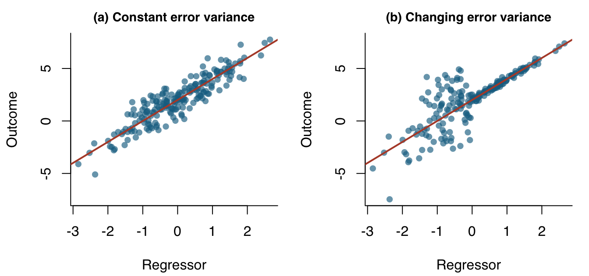
Figure 4.1: The same conditional mean with different error variances. Both panels use the same regressor and underlying standard-normal errors; the line is the conditional mean. Only the error scale changes.
Example 4.2 (Different dispersion across residential meters) The annual electricity data in AEC::CHelectricity_annual (Appendix 10.5) provide an empirical illustration. We retain 2023 meters with all 365 daily import totals observed, so each row describes one meter over one complete year. Let \(Y_i\) be its average daily electricity drawn from the grid, in kWh/day, and let \(D_i\) equal one for a single-family house and zero for an apartment.
With this binary regressor, the conditional-mean model \(\mathbb{E}(Y_i\mid D_i)=\alpha+\beta D_i\) allows a separate mean for each group. Homoskedasticity would additionally require the same variance around those two means. The two group means need not be equal for the errors to be homoskedastic.
Code
| Meter type | Meters | Mean (kWh/day) | Within-group SD (kWh/day) |
|---|---|---|---|
| Apartment | 909 | 7.38 | 5.82 |
| Single-family house | 325 | 32.00 | 21.77 |
The within-group standard deviation is 5.82 kWh/day for apartments and 21.77 for houses. Subtracting each group’s mean leaves these standard deviations unchanged. Figure 4.2 displays those centred observations: both groups are centred at zero, but their spreads differ substantially.
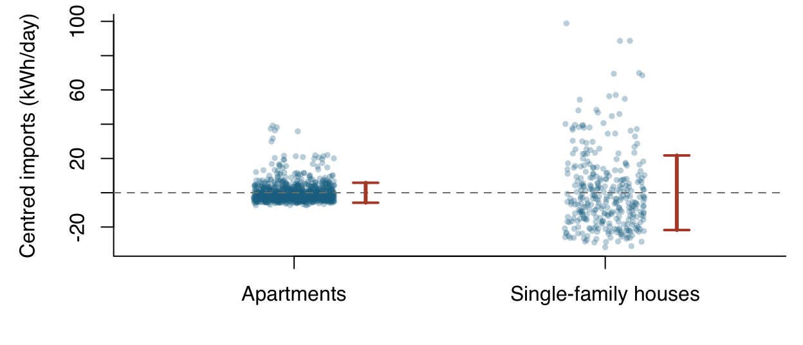
Figure 4.2: Electricity imports relative to the meter-type mean, 2023. Each point is one meter with a complete year of readings; horizontal jitter separates overlapping points. The orange bars extend one within-group standard deviation above and below zero. The vertical scale is common to both groups.
Differences in dwelling size, equipment and occupancy can contribute to the greater spread among houses. The point here is descriptive: allowing different conditional means does not automatically make the error variance constant. Grid imports measure electricity drawn from the grid; with on-site generation, they do not measure total electricity consumption.
The next assumption concerns the correlation of errors across observations. In the turnout application, this would rule out common unexplained influences across cantons or objects on the same voting day.
Hypothesis 4.4 (Uncorrelated errors) \[ \forall i \ne j, \quad \mathbb{C}ov(\varepsilon_i,\varepsilon_j|\mathbf{X})=0. \]
We will often need the conditional covariance matrix of the errors. Proposition 4.2 gives its form when both Hypotheses 4.3 and 4.4 hold.
Proposition 4.2 If Hypotheses 4.3 and 4.4 hold, then: \[ \mathbb{V}ar(\boldsymbol\varepsilon|\mathbf{X})= \sigma^2 \mathbf{Id}, \] where \(\mathbf{Id}\) is the \(n \times n\) identity matrix.
We will sometimes assume that errors are Gaussian—or normal. We will then invoke Hypothesis 4.5:
Hypothesis 4.5 (Normal distribution) \[ \boldsymbol\varepsilon\mid\mathbf{X}\sim\mathcal{N}(\mathbf{0},\sigma^2\mathbf{Id}_n). \]
4.2 Least-squares estimation
4.2.1 Derivation of the OLS formula
With the assumptions and notation in place, we now turn to estimation. Ordinary Least Squares (OLS) chooses the coefficient vector \(\mathbf{b}\) that minimizes the sum of squared residuals. Residuals are the sample counterparts of the unobserved errors \(\varepsilon_i\).
For a given vector of coefficients \(\mathbf{b}=[b_1,\dots,b_K]'\), the sum of squared residuals is: \[ f(\mathbf{b}) =\sum_{i=1}^n \left(y_i - \sum_{j=1}^K x_{i,j} b_j \right)^2 = \sum_{i=1}^n (y_i - \mathbf{x}_i' \mathbf{b})^2. \] Minimizing this sum amounts to minimizing: \[ f(\mathbf{b}) = (\mathbf{y} - \mathbf{X}\mathbf{b})'(\mathbf{y} - \mathbf{X}\mathbf{b}). \]
Since:4 \[ \frac{\partial f}{\partial \mathbf{b}}(\mathbf{b}) = - 2 \mathbf{X}'\mathbf{y} + 2 \mathbf{X}'\mathbf{X}\mathbf{b}, \] it comes that a necessary first-order condition (FOC) is: \[\begin{equation} \mathbf{X}'\mathbf{X}\mathbf{b} = \mathbf{X}'\mathbf{y}.\tag{4.2} \end{equation}\] Under Assumption 4.1, \(\mathbf{X}'\mathbf{X}\) is invertible. Hence: \[ \boxed{\mathbf{b} = (\mathbf{X}'\mathbf{X})^{-1} \mathbf{X}'\mathbf{y}.} \] Vector \(\mathbf{b}\) minimizes the sum of squared residuals. (\(f\) is a non-negative quadratic function, it therefore admits a minimum.)
We have: \[ \mathbf{y} = \underbrace{\mathbf{X}\mathbf{b}}_{\mbox{fitted values } (\hat{\mathbf{y}})} + \underbrace{\mathbf{e}}_{\mbox{residuals}} \]
The estimated residuals are: \[\begin{equation} \mathbf{e} = \mathbf{y} - \mathbf{X} (\mathbf{X}'\mathbf{X})^{-1} \mathbf{X}' \mathbf{y} = \mathbf{M} \mathbf{y},\tag{4.3} \end{equation}\] where \(\mathbf{M} := \mathbf{Id} - \mathbf{X} (\mathbf{X}'\mathbf{X})^{-1} \mathbf{X}'\) is called the residual maker matrix.
Moreover, the fitted values \(\hat{\mathbf{y}}\) are given by: \[\begin{equation} \hat{\mathbf{y}}=\mathbf{X} (\mathbf{X}'\mathbf{X})^{-1} \mathbf{X}' \mathbf{y} = \mathbf{P} \mathbf{y},\tag{4.4} \end{equation}\] where \(\mathbf{P}=\mathbf{X} (\mathbf{X}'\mathbf{X})^{-1} \mathbf{X}'\) is a projection matrix.
These matrices \(\mathbf{M}\) and \(\mathbf{P}\) are such that:
- \(\mathbf{M} \mathbf{X} = \mathbf{0}\): if one regresses one of the explanatory variables on \(\mathbf{X}\), the residuals are null.
- \(\mathbf{M}\mathbf{y}=\mathbf{M}\boldsymbol\varepsilon\) (because \(\mathbf{y} = \mathbf{X}\boldsymbol\beta + \boldsymbol\varepsilon\) and \(\mathbf{M} \mathbf{X} = \mathbf{0}\)).
Here are some additional properties of \(\mathbf{M}\) and \(\mathbf{P}\):
- \(\mathbf{M}\) is symmetric (\(\mathbf{M} = \mathbf{M}'\)) and idempotent (\(\mathbf{M} = \mathbf{M}^2 = \mathbf{M}^k\) for \(k>0\)).
- \(\mathbf{P}\) is symmetric and idempotent.
- \(\mathbf{P}\mathbf{X} = \mathbf{X}\).
- \(\mathbf{P} \mathbf{M} = \mathbf{M} \mathbf{P} = 0\).
- \(\mathbf{y} = \mathbf{P}\mathbf{y} + \mathbf{M}\mathbf{y}\) (decomposition of \(\mathbf{y}\) into two orthogonal parts).
It is easily checked that \(\mathbf{X}'\mathbf{e}=0\). Each column of \(\mathbf{X}\) is therefore orthogonal to \(\mathbf{e}\). In particular, if an intercept is included in the regression (\(x_{i,1} \equiv 1\) for all \(i\)’s, i.e., the first column of \(\mathbf{X}\) is filled with ones), the average of the residuals is null.
Example 4.3 (Bivariate case) Consider a bivariate situation, where we regress \(y_i\) on a constant and an explanatory variable \(w_i\). We have \(K=2\), and \(\mathbf{X}\) is a \(n \times 2\) matrix whose \(i^{th}\) row is \([x_{i,1},x_{i,2}]\), with \(x_{i,1}=1\) (to account for the intercept) and with \(w_i = x_{i,2}\) (say).
We have: \[\begin{eqnarray*} \mathbf{X}'\mathbf{X} &=& \left[\begin{array}{cc} n & \sum_i w_i \\ \sum_i w_i & \sum_i w_i^2 \end{array} \right],\\ (\mathbf{X}'\mathbf{X})^{-1} &=& \frac{1}{n\sum_i w_i^2-(\sum_i w_i)^2} \left[\begin{array}{cc} \sum_i w_i^2 & -\sum_i w_i \\ -\sum_i w_i & n \end{array} \right],\\ (\mathbf{X}'\mathbf{X})^{-1}\mathbf{X}'\mathbf{y} &=& \frac{1}{n\sum_i w_i^2-(\sum_i w_i)^2} \left[\begin{array}{c} \sum_i w_i^2\sum_i y_i -\sum_i w_i \sum_i w_iy_i \\ -\sum_i w_i \sum_i y_i + n \sum_i w_i y_i \end{array} \right]\\ &=& \frac{1}{\frac{1}{n}\sum_i(w_i - \bar{w})^2} \left[\begin{array}{c} \frac{\bar{y}}{n}\sum_i w_i^2 -\frac{\bar{w}}{n}\sum_i w_iy_i \\ \frac{1}{n}\sum_i (w_i-\bar{w})(y_i-\bar{y}) \end{array} \right]. \end{eqnarray*}\]
It can be seen that the second element of \(\mathbf{b}=(\mathbf{X}'\mathbf{X})^{-1}\mathbf{X}'\mathbf{y}\) is: \[ b_2 = \frac{\overline{\mathbb{C}ov(W,Y)}}{\overline{\mathbb{V}ar(W)}}, \] where \(\overline{\mathbb{C}ov(W,Y)}\) and \(\overline{\mathbb{V}ar(W)}\) are sample estimates.
Since there is a constant in the regression, we have \(b_1 = \bar{y} - b_2 \bar{w}\).
4.2.2 Properties of the OLS estimate (small sample)
The OLS properties stated in Proposition 4.3 are valid for any sample size \(n\):
Proposition 4.3 (Properties of the OLS estimator) We have:
Proof. Under Hypothesis 4.1, \(\mathbf{X}'\mathbf{X}\) can be inverted. We have: \[ \mathbf{b} = (\mathbf{X}'\mathbf{X})^{-1} \mathbf{X}'\mathbf{y} = \boldsymbol\beta + (\mathbf{X}'\mathbf{X})^{-1} \mathbf{X}' {\boldsymbol\varepsilon}. \]
- Let us consider the expectation of the last term, i.e. \(\mathbb{E}((\mathbf{X}'\mathbf{X})^{-1} \mathbf{X}' {\boldsymbol\varepsilon})\). Using the law of iterated expectations, we obtain: \[ \mathbb{E}((\mathbf{X}'\mathbf{X})^{-1} \mathbf{X}' {\boldsymbol\varepsilon}) = \mathbb{E}(\mathbb{E}[(\mathbf{X}'\mathbf{X})^{-1} \mathbf{X}' {\boldsymbol\varepsilon}|\mathbf{X}]) = \mathbb{E}((\mathbf{X}'\mathbf{X})^{-1} \mathbf{X}'\mathbb{E}[{\boldsymbol\varepsilon}|\mathbf{X}]). \] By Hypothesis 4.2, we have \(\mathbb{E}[{\boldsymbol\varepsilon}|\mathbf{X}]=0\). Hence \(\mathbb{E}((\mathbf{X}'\mathbf{X})^{-1} \mathbf{X}' {\boldsymbol\varepsilon}) =0\) and result (i) follows.
- \(\mathbb{V}ar(\mathbf{b}|\mathbf{X}) = (\mathbf{X}'\mathbf{X})^{-1} \mathbf{X}' \mathbb{E}(\boldsymbol\varepsilon\boldsymbol\varepsilon'|\mathbf{X}) \mathbf{X} (\mathbf{X}'\mathbf{X})^{-1}\). By Prop. 4.2, if 4.3 and 4.4 hold, then we have \(\mathbb{E}(\boldsymbol\varepsilon\boldsymbol\varepsilon'|\mathbf{X})=\mathbb{V}ar(\boldsymbol\varepsilon|\mathbf{X})=\sigma^2 \mathbf{Id}\).
Together, Hypotheses 4.1 to 4.4 form the so-called Gauss-Markov set of assumptions. Under these assumptions, the OLS estimator feature the lowest possible variance within the family of linear unbiased estimates of \(\boldsymbol\beta\):
Theorem 4.1 (Gauss-Markov Theorem) Under Assumptions 4.1 to 4.4, for any vector \(w\), the minimum-variance linear unbiased estimator of \(w' \boldsymbol\beta\) is \(w' \mathbf{b}\), where \(\mathbf{b}\) is the least squares estimator. (BLUE: Best Linear Unbiased Estimator.)
Proof. Consider \(\mathbf{b}^* = C \mathbf{y}\), another linear unbiased estimator of \(\boldsymbol\beta\). Since it is unbiased, we must have \(\mathbb{E}(C\mathbf{y}|\mathbf{X}) = \mathbb{E}(C\mathbf{X}\boldsymbol\beta + C\boldsymbol\varepsilon|\mathbf{X}) = \boldsymbol\beta\). We have \(\mathbb{E}(C\boldsymbol\varepsilon|\mathbf{X})=C\mathbb{E}(\boldsymbol\varepsilon|\mathbf{X})=0\) (by 4.2). Therefore, conditional unbiasedness for every \(\boldsymbol\beta\) requires \(C\mathbf{X}=\mathbf{Id}\). (The matrix \(C\) may depend on the observed design matrix \(\mathbf{X}\).) Let us compute \(\mathbb{V}ar(\mathbf{b^*}|\mathbf{X})\). For this, we introduce \(D = C - (\mathbf{X}'\mathbf{X})^{-1}\mathbf{X}'\), which is such that \(D\mathbf{y}=\mathbf{b}^*-\mathbf{b}\). The fact that \(C\mathbf{X}=\mathbf{Id}\) implies that \(D\mathbf{X} = \mathbf{0}\). We have \(\mathbb{V}ar(\mathbf{b^*}|\mathbf{X}) = \mathbb{V}ar(C \mathbf{y}|\mathbf{X}) =\mathbb{V}ar(C \boldsymbol\varepsilon|\mathbf{X}) = \sigma^2CC'\) (by Assumptions 4.3 and 4.4, see Prop. 4.2). Using \(C=D+(\mathbf{X}'\mathbf{X})^{-1}\mathbf{X}'\) and exploiting the fact that \(D\mathbf{X} = \mathbf{0}\) leads to: \[ \mathbb{V}ar(\mathbf{b^*}|\mathbf{X}) =\sigma^2\left[(D+(\mathbf{X}'\mathbf{X})^{-1}\mathbf{X}')(D+(\mathbf{X}'\mathbf{X})^{-1}\mathbf{X}')'\right] = \mathbb{V}ar(\mathbf{b}|\mathbf{X}) + \sigma^2 \mathbf{D}\mathbf{D}'. \] Therefore, we have \[\begin{eqnarray*} &&\mathbb{V}ar(w'\mathbf{b^*}|\mathbf{X})=w'\mathbb{V}ar(\mathbf{b}|\mathbf{X})w + \sigma^2 w'\mathbf{D}\mathbf{D}'w\\ &\ge& w'\mathbb{V}ar(\mathbf{b}|\mathbf{X})w=\mathbb{V}ar(w'\mathbf{b}|\mathbf{X}). \end{eqnarray*}\]
The Frisch-Waugh theorem (Theorem 4.2) reveals the relationship between the OLS estimator and the notion of partial correlation coefficient. Consider the linear least square regression of \(\mathbf{y}\) on \(\mathbf{X}\). We introduce the notations:
- \(\mathbf{b}^{\mathbf{y}/\mathbf{X}}\): OLS estimates of \(\boldsymbol\beta\),
- \(\mathbf{M}^{\mathbf{X}}\): residual-maker matrix of any regression on \(\mathbf{X}\) (given by \(\mathbf{Id} - \mathbf{X} (\mathbf{X}'\mathbf{X})^{-1} \mathbf{X}'\)),
- \(\mathbf{P}^{\mathbf{X}}\): projection matrix of any regression on \(\mathbf{X}\) (given by \(\mathbf{X} (\mathbf{X}'\mathbf{X})^{-1} \mathbf{X}'\)).
Let us split the set of explanatory variables into two: \(\mathbf{X} = [\mathbf{X}_1,\mathbf{X}_2]\). With obvious notations: \(\mathbf{b}^{\mathbf{y}/\mathbf{X}}=[\mathbf{b}_1',\mathbf{b}_2']'\).
Theorem 4.2 (Frisch-Waugh Theorem) We have: \[ \mathbf{b}_2 = \mathbf{b}^{\mathbf{M^{\mathbf{X}_1}y}/\mathbf{M^{\mathbf{X}_1}\mathbf{X}_2}}. \]
Proof. The minimization of the least squares leads to (these are first-order conditions, see Eq. (4.2)): \[ \left[ \begin{array}{cc} \mathbf{X}_1'\mathbf{X}_1 & \mathbf{X}_1'\mathbf{X}_2 \\ \mathbf{X}_2'\mathbf{X}_1 & \mathbf{X}_2'\mathbf{X}_2\end{array}\right] \left[ \begin{array}{c} \mathbf{b}_1 \\ \mathbf{b}_2\end{array}\right] = \left[ \begin{array}{c} \mathbf{X}_1' \mathbf{y} \\ \mathbf{X}_2' \mathbf{y} \end{array}\right]. \] Use the first-row block of equations to solve for \(\mathbf{b}_1\) first; it comes as a function of \(\mathbf{b}_2\). Then use the second set of equations to solve for \(\mathbf{b}_2\), which leads to: \[\begin{eqnarray*} \mathbf{b}_2 &=& [\mathbf{X}_2'\mathbf{X}_2 - \mathbf{X}_2'\mathbf{X}_1(\mathbf{X}_1'\mathbf{X}_1)^{-1}\mathbf{X}_1'\mathbf{X}_2]^{-1}\mathbf{X}_2'(\mathbf{Id} - \mathbf{X}_1(\mathbf{X}_1'\mathbf{X}_1)^{-1}\mathbf{X}_1')\mathbf{y}\\ &=& [\mathbf{X}_2' \mathbf{M}^{\mathbf{X}_1}\mathbf{X}_2]^{-1}\mathbf{X}_2'\mathbf{M}^{\mathbf{X}_1}\mathbf{y}. \end{eqnarray*}\] Using the fact that \(\mathbf{M}^{\mathbf{X}_1}\) is idempotent and symmetric leads to the result.
This suggests a second way of estimating \(\mathbf{b}_2\):
- Regress \(Y\) on \(X_1\), regress \(X_2\) on \(X_1\).
- Regress the residuals associated with the former regression on those associated with the latter regressions.
Example 4.4 (A trend after removing seasonality) Has the monthly number of injury accidents in Zurich changed over time? Accident counts can also differ systematically between winter and summer. To separate these two patterns, regress the monthly count on a time trend and calendar-month indicators, using the 180 months in AEC::CHaccidents_monthly (Appendix 10.1). The trend is measured in years since January 2011.
The partial-regression calculation has three steps: remove month-of-year means from accident counts; remove them from the trend; then regress the first set of residuals on the second. The theorem says that this gives exactly the trend coefficient from the full regression.
Code
data("CHaccidents_monthly",package="AEC")
accident_reg <- CHaccidents_monthly
accident_reg$trend <- (seq_len(nrow(accident_reg))-1)/12
accident_full <- lm(injury_accidents~trend+factor(month),data=accident_reg)
accident_y_partial <- residuals(lm(injury_accidents~factor(month),data=accident_reg))
accident_x_partial <- residuals(lm(trend~factor(month),data=accident_reg))
accident_partial <- lm(accident_y_partial~accident_x_partial-1)
data_table(data.frame(Method=c("Full regression","Partial regression"),
Trend_coefficient=c(coef(accident_full)["trend"],coef(accident_partial)[1])),
digits=4,row.names=FALSE,col.names=c("Method","Trend coefficient (accidents per year)"))| Method | Trend coefficient (accidents per year) |
|---|---|
| Full regression | 1.5128 |
| Partial regression | 1.5128 |
Code
The coefficients agree. A one-year increase in the trend is associated with a change of 1.51 in the fitted monthly injury-accident count, holding the calendar month fixed. This is a trend in counts, not accident risk per journey. Section 4.6.4 examines residual dependence and its consequences for inference.
When \(b_2\) is scalar (and then \(\mathbf{X}_2\) is of dimension \(n \times 1\)), Theorem 4.2 gives the expression of the partial regression coefficient \(b_2\): \[ b_2 = \frac{\mathbf{X}_2'M^{\mathbf{X}_1}\mathbf{y}}{\mathbf{X}_2'M^{\mathbf{X}_1}\mathbf{X}_2}. \]
4.2.3 Goodness of fit
The preceding results concern the sampling properties of the coefficient estimates. We now ask a different question: how closely do the fitted values reproduce the observed outcomes within the sample?
Define the total variation in \(y\) as the sum of squared deviations (from the sample mean): \[ TSS = \sum_{i=1}^{n} (y_i - \bar{y})^2. \] We have: \[ \mathbf{y} = \mathbf{X}\mathbf{b} + \mathbf{e} = \hat{\mathbf{y}} + \mathbf{e} \] In the following, we assume that the regression includes a constant (i.e. for all \(i\), \(x_{i,1}=1\)). Denote by \(\mathbf{M}^0\) the matrix that transforms observations into deviations from sample means. Using that \(\mathbf{M}^0 \mathbf{e} = \mathbf{e}\) and that \(\mathbf{X}' \mathbf{e}=0\), we have: \[\begin{eqnarray*} \underbrace{\mathbf{y}'\mathbf{M}^0\mathbf{y}}_{\mbox{Total sum of sq.}} &=& (\mathbf{X}\mathbf{b} + \mathbf{e})' \mathbf{M}^0 (\mathbf{X}\mathbf{b} + \mathbf{e})\\ &=& \underbrace{\mathbf{b}' \mathbf{X}' \mathbf{M}^0 \mathbf{X}\mathbf{b}}_{\mbox{"Explained" sum of sq.}} + \underbrace{\mathbf{e}'\mathbf{e}}_{\mbox{Sum of sq. residuals}}\\ TSS &=& Expl.SS + SSR. \end{eqnarray*}\]
We can now define the coefficient of determination: \[\begin{equation} \boxed{\mbox{Coefficient of determination} = \frac{Expl.SS}{TSS} = 1 - \frac{SSR}{TSS} = 1 - \frac{\mathbf{e}'\mathbf{e}}{\mathbf{y}'\mathbf{M}^0\mathbf{y}}.}\tag{4.5} \end{equation}\]
It can be shown (Greene (2003), Section 3.5) that: \[ \mbox{Coefficient of determination} = \frac{[\sum_{i=1}^n(y_i - \bar{y})(\hat{y_i} - \bar{y})]^2}{\sum_{i=1}^n(y_i - \bar{y})^2 \sum_{i=1}^n(\hat{y_i} - \bar{y})^2}. \] That is, the \(R^2\) is the sample squared correlation between \(y\) and the (regression-implied) \(y\)’s predictions.
The higher the \(R^2\), the better the in-sample fit of a model. One has to be cautious with \(R^2\), however, because adding explanatory variables cannot reduce it. As stated by Proposition 4.5, it may increase even when the new variable has no population relationship with the dependent variable. In the limit, \(n\) linearly independent regressors span \(\mathbb{R}^n\) and fit any \(n\)-observation outcome vector exactly, resulting in \(R^2=1\) when the usual definition is applicable.
Proposition 4.4 (Change in SSR when a variable is added) We have: \[\begin{equation} \mathbf{u}'\mathbf{u} = \mathbf{e}'\mathbf{e} - c^2(\mathbf{z^*}'\mathbf{z^*}) \qquad (\le \mathbf{e}'\mathbf{e}) \tag{4.6} \end{equation}\] where (i) \(\mathbf{u}\) and \(\mathbf{e}\) are the residuals in the regressions of \(\mathbf{y}\) on \([\mathbf{X},\mathbf{z}]\) and of \(\mathbf{y}\) on \(\mathbf{X}\), respectively, (ii) \(c\) is the regression coefficient on \(\mathbf{z}\) in the former regression and where \(\mathbf{z}^*\) are the residuals in the regression of \(\mathbf{z}\) on \(\mathbf{X}\).
Proof. The OLS estimates \([\mathbf{d}',\mathbf{c}]'\) in the regression of \(\mathbf{y}\) on \([\mathbf{X},\mathbf{z}]\) satisfies (first-order cond., Eq. (4.2)): \[ \left[ \begin{array}{cc} \mathbf{X}'\mathbf{X} & \mathbf{X}'\mathbf{z} \\ \mathbf{z}'\mathbf{X} & \mathbf{z}'\mathbf{z}\end{array}\right] \left[ \begin{array}{c} \mathbf{d} \\ c\end{array}\right] = \left[ \begin{array}{c} \mathbf{X}' \mathbf{y} \\ \mathbf{z}' \mathbf{y} \end{array}\right]. \] Hence, in particular \(\mathbf{d} = \mathbf{b} - (\mathbf{X}'\mathbf{X})^{-1}\mathbf{X}'\mathbf{z}c\), where \(\mathbf{b}\) is the OLS of \(\mathbf{y}\) on \(\mathbf{X}\). Substituting in \(\mathbf{u} = \mathbf{y} - \mathbf{X}\mathbf{d} - \mathbf{z}c\), we get \(\mathbf{u} = \mathbf{e} - \mathbf{z}^*c\). We therefore have: \[\begin{equation} \mathbf{u}'\mathbf{u} = (\mathbf{e} - \mathbf{z}^*c)'(\mathbf{e} - \mathbf{z}^*c)= \mathbf{e}'\mathbf{e} + c^2(\mathbf{z^*}'\mathbf{z^*}) - 2 c\mathbf{z^*}'\mathbf{e}.\tag{4.7} \end{equation}\] Now \(\mathbf{z^*}'\mathbf{e} = \mathbf{z^*}'(\mathbf{y} - \mathbf{X}\mathbf{b}) = \mathbf{z^*}'\mathbf{y}\) because \(\mathbf{z}^*\) are the residuals in an OLS regression on \(\mathbf{X}\). Since \(c = (\mathbf{z^*}'\mathbf{z^*})^{-1}\mathbf{z^*}'\mathbf{y^*}\) (by an application of Theorem 4.2), we have \((\mathbf{z^*}'\mathbf{z^*})c = \mathbf{z^*}'\mathbf{y^*}\) and, therefore, \(\mathbf{z^*}'\mathbf{e} = (\mathbf{z^*}'\mathbf{z^*})c\). Substituting this expression into Eq. (4.7) proves the result.
Proposition 4.5 (Change in the coefficient of determination when a variable is added) Denoting by \(R_W^2\) the coefficient of determination in the regression of \(\mathbf{y}\) on some variable \(\mathbf{W}\), we have: \[ R_{\mathbf{X},\mathbf{z}}^2 = R_{\mathbf{X}}^2 + (1-R_{\mathbf{X}}^2)(r_{yz}^\mathbf{X})^2, \] where \(r_{yz}^\mathbf{X}\) is the coefficient of partial correlation (see Definition 9.5).
Proof. Using the notation of Proposition 4.4, Theorem 4.2 implies that \(c = (\mathbf{z^*}'\mathbf{z^*})^{-1}\mathbf{z^*}'\mathbf{y^*}\). Substitution into Eq. (4.6) gives \(\mathbf{u}'\mathbf{u} = \mathbf{e}'\mathbf{e} - (\mathbf{z^*}'\mathbf{y^*})^2/(\mathbf{z^*}'\mathbf{z^*})\). By the definition of partial correlation in Eq. (9.2), \(\mathbf{u}'\mathbf{u} = \mathbf{e}'\mathbf{e}\left(1 - (r_{yz}^\mathbf{X})^2\right)\). Dividing both sides by \(\mathbf{y}'\mathbf{M}_0\mathbf{y}\) proves the result.
Figure 4.3, below, illustrates the fact that one can obtain an \(R^2\) of one by regressing a sample of length \(n\) on any set of \(n\) linearly-independent variables.
Code
n <- 30;Y <- rnorm(n);X <- matrix(rnorm(n^2),n,n)
all_R2 <- NULL;all_adjR2 <- NULL
for(j in 0:(n-1)){
if(j==0){eq <- lm(Y~1)}else{eq <- lm(Y~X[,1:j])}
all_R2 <- c(all_R2,summary(eq)$r.squared)
all_adjR2 <- c(all_adjR2,summary(eq)$adj.r.squared)
}
r2_par <- par(no.readonly=TRUE)
par(mar=c(4.3,4.4,1,1),family="sans")
plot(0:(n-1),all_R2,type="b",pch=16,col="#176F91",bty="l",
ylim=range(c(all_R2,all_adjR2),na.rm=TRUE),
xlab="Number of slopes (intercept excluded)",ylab="Fit measure")
lines(0:(n-1),all_adjR2,type="b",pch=1,col="#B44C35")
abline(h=0,col="grey80",lty=3)
legend("topleft",c("R-squared","Adjusted R-squared"),
col=c("#176F91","#B44C35"),lty=1,pch=c(16,1),bty="n")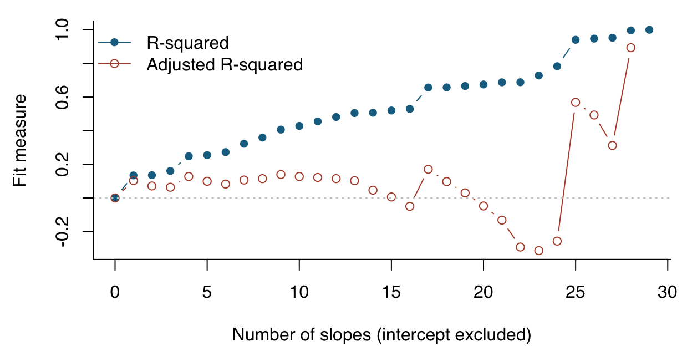
Figure 4.3: In-sample fit with irrelevant regressors: 30 observations and independent noise predictors. Ordinary R-squared cannot decrease when predictors are added. The final model has 29 slopes plus an intercept and fits exactly; its adjusted R-squared is undefined.
In order to address the risk of adding irrelevant explanatory variables, measures of adjusted \(R^2\) have been proposed. Compared to the standard \(R^2\), these measures add penalties that depend on the number of covariates employed in the regression. A common adjusted \(R^2\) measure, denoted by \(\bar{R}^2\), is the following: \[\begin{equation*} \boxed{\bar{R}^2 = 1 - \frac{\mathbf{e}'\mathbf{e}/(n-K)}{\mathbf{y}'\mathbf{M}^0\mathbf{y}/(n-1)} = 1 - \frac{n-1}{n-K}(1-R^2).} \end{equation*}\]
4.2.4 Inference and confidence intervals (in small sample)
Good fit does not by itself imply precise coefficient estimates. Inference requires the sampling distribution of \(\mathbf{b}\), which is available exactly under the Gaussian assumptions stated above.
Under the normality assumption (Assumption 4.5), we know the distribution of \(\mathbf{b}\) (conditional on \(\mathbf{X}\)). Indeed, \(\mathbf{b} = \boldsymbol\beta + (\mathbf{X}'\mathbf{X})^{-1} \mathbf{X}'\boldsymbol\varepsilon\). Therefore, conditional on \(\mathbf{X}\), vector \(\mathbf{b}\) is an affine combination of Gaussian variables—the components of \(\boldsymbol\varepsilon\). As a result, it is also Gaussian. Its distribution is therefore completely characterized by its mean and variance, and we have: \[\begin{equation} \mathbf{b}|\mathbf{X} \sim \mathcal{N}(\boldsymbol\beta,\sigma^2(\mathbf{X}'\mathbf{X})^{-1}).\tag{4.8} \end{equation}\]
Eq. (4.8) can be used to conduct inference and tests. However, in practice, we do not know \(\sigma^2\) (which is a population parameter). The following proposition gives an unbiased estimate of \(\sigma^2\). The variance formulas and exact t and F tests below require \(n>K\).
Proposition 4.6 Under 4.1 to 4.4, an unbiased estimate of \(\sigma^2\) is given by: \[\begin{equation} s^2 = \frac{\mathbf{e}'\mathbf{e}}{n-K}.\tag{4.9} \end{equation}\] (It is sometimes denoted by \(\sigma^2_{OLS}\).)
Proof. We have: \[\begin{eqnarray*} \mathbb{E}(\mathbf{e}'\mathbf{e}|\mathbf{X})&=&\mathbb{E}(\boldsymbol{\varepsilon}'\mathbf{M}\boldsymbol{\varepsilon}|\mathbf{X})=\mathbb{E}(\mbox{Tr}(\boldsymbol{\varepsilon}'\mathbf{M}\boldsymbol{\varepsilon})|\mathbf{X}))\\ &=&\mbox{Tr}(\mathbf{M}\mathbb{E}(\boldsymbol{\varepsilon}\boldsymbol{\varepsilon}'|\mathbf{X}))=\sigma^2 \mbox{Tr}(\mathbf{M}). \end{eqnarray*}\] (Note that we have \(\mathbb{E}(\boldsymbol{\varepsilon}\boldsymbol{\varepsilon}'|\mathbf{X})=\sigma^2\mathbf{Id}\) by Assumptions 4.3 and 4.4, see Prop. 4.2.) Moreover: \[\begin{eqnarray*} \mbox{Tr}(\mathbf{M})&=&n-\mbox{Tr}(\mathbf{X}(\mathbf{X}'\mathbf{X})^{-1}\mathbf{X}')\\ &=&n-\mbox{Tr}((\mathbf{X}'\mathbf{X})^{-1}\mathbf{X}'\mathbf{X})=n-\mbox{Tr}(\mathbf{Id}_{K \times K}), \end{eqnarray*}\] which leads to the result.
Two results will prove important to produce inference:
- We know the conditional distribution of \(s^2\) (Prop. 4.7).
- Conditional on \(\mathbf{X}\), \(s^2\) and \(\mathbf{b}\) are independent random variables (Prop. 4.8).
Proposition 4.7 Under 4.1 to 4.5, we have: \(\dfrac{s^2}{\sigma^2} | \mathbf{X} \sim \frac{1}{n-K}\chi^2(n-K)\).
Proof. We have \(\mathbf{e}'\mathbf{e}=\boldsymbol\varepsilon'\mathbf{M}\boldsymbol\varepsilon\). \(\mathbf{M}\) is an idempotent symmetric matrix. Therefore it can be decomposed as \(PDP'\) where \(D\) is a diagonal matrix and \(P\) is an orthogonal matrix. As a result \(\mathbf{e}'\mathbf{e} = (P'\boldsymbol\varepsilon)'D(P'\boldsymbol\varepsilon)\), i.e. \(\mathbf{e}'\mathbf{e}\) is a weighted sum of independent squared Gaussian variables (the entries of \(P'\boldsymbol\varepsilon\) are independent because they are Gaussian —under 4.5— and uncorrelated). The variance of each of these i.i.d. Gaussian variable is \(\sigma^2\). Because \(\mathbf{M}\) is an idempotent symmetric matrix, its eigenvalues are either 0 or 1, and its rank equals its trace (see Propositions 9.3 and 9.4). Further, its trace is equal to \(n-K\) (see proof of Eq. (4.9)). Therefore \(D\) has \(n-K\) entries equal to 1 and \(K\) equal to 0. Hence, \(\mathbf{e}'\mathbf{e} = (P'\boldsymbol\varepsilon)'D(P'\boldsymbol\varepsilon)\) is a sum of \(n-K\) squared independent Gaussian variables of variance \(\sigma^2\). Therefore \(\frac{\mathbf{e}'\mathbf{e}}{\sigma^2} = (n-K)\frac{s^2}{\sigma^2}\) is a sum of \(n-K\) squared i.i.d. standard normal variables. The result follows by the definition of the chi-square distribution (see Def. 9.13).
Proposition 4.8 Under Hypotheses 4.1 to 4.5, \(\mathbf{b}\) and \(s^2\) are independent conditional on \(\mathbf{X}\).
Proof. We have \(\mathbf{b}=\boldsymbol\beta + [\mathbf{X}'{\mathbf{X}}]^{-1}\mathbf{X}'\boldsymbol\varepsilon\) and \(s^2 = \boldsymbol\varepsilon' \mathbf{M} \boldsymbol\varepsilon/(n-K)\). Hence \(\mathbf{b}\) is an affine combination of \(\boldsymbol\varepsilon\) and \(s^2\) is a quadratic combination of the same Gaussian shocks. One can write \(s^2\) as \(s^2 = (\mathbf{M}\boldsymbol\varepsilon)' \mathbf{M} \boldsymbol\varepsilon/(n-K)\) and \(\mathbf{b}\) as \(\boldsymbol\beta + \mathbf{T}\boldsymbol\varepsilon\). Conditional on \(\mathbf{X}\), \(\mathbf{T}\mathbf{M}=0\) implies that \(\mathbf{T}\boldsymbol\varepsilon\) and \(\mathbf{M}\boldsymbol\varepsilon\) are independent (because two uncorrelated Gaussian variables are independent), therefore \(\mathbf{b}\) and \(s^2\) are conditionally independent.
Consistently with Eq. (4.8), under Hypotheses 4.1 to 4.5, the \(k^{th}\) entry of \(\mathbf{b}\) satisfies: \[ b_k | \mathbf{X} \sim \mathcal{N}(\beta_k,\sigma^2 v_k), \] where \(v_k\) is the k\(^{th}\) component of the diagonal of \((\mathbf{X}'\mathbf{X})^{-1}\).
Moreover, we have (Prop. 4.7): \[ \frac{(n-K)s^2}{\sigma^2} | \mathbf{X} \sim \chi ^2 (n-K). \]
As a result (using Propositions 4.7 and 4.8), we have: \[\begin{equation} \boxed{t_k = \frac{\frac{b_k - \beta_k}{\sqrt{\sigma^2 v_k}}}{\sqrt{\frac{(n-K)s^2}{\sigma^2(n-K)}}} = \frac{b_k - \beta_k}{\sqrt{s^2v_k}} \sim t(n-K),}\tag{4.10} \end{equation}\] where \(t(n-K)\) denotes a Student \(t\) distribution with \(n-K\) degrees of freedom (see Def. 9.12).5
Note that \(s^2 v_k\) is not exactly the conditional variance of \(b_k\): The variance of \(b_k\) conditional on \(\mathbf{X}\) is \(\sigma^2 v_k\). However \(s^2 v_k\) is an unbiased estimate of \(\sigma^2 v_k\) (by Prop. 4.6).
The previous result (Eq. (4.10)) can be extended to any linear combinations of elements of \(\mathbf{b}\). (Eq. (4.10) is for its \(k^{th}\) component only.) Let us consider \(\boldsymbol\alpha'\mathbf{b}\), the OLS estimate of \(\boldsymbol\alpha'\boldsymbol\beta\). From Eq. (4.8), we have: \[ \boldsymbol\alpha'\mathbf{b} | \mathbf{X} \sim \mathcal{N}(\boldsymbol\alpha'\boldsymbol\beta,\sigma^2 \boldsymbol\alpha'(\mathbf{X}'\mathbf{X})^{-1}\boldsymbol\alpha). \] Therefore: \[ \frac{\boldsymbol\alpha'\mathbf{b} - \boldsymbol\alpha'\boldsymbol\beta}{\sqrt{\sigma^2 \boldsymbol\alpha'(\mathbf{X}'\mathbf{X})^{-1}\boldsymbol\alpha}} | \mathbf{X} \sim \mathcal{N}(0,1). \] Using the same approach as the one used to derive Eq. (4.10), one can show that Props. 4.7 and 4.8 also imply that: \[\begin{equation} \boxed{\frac{\boldsymbol\alpha'\mathbf{b} - \boldsymbol\alpha'\boldsymbol\beta}{\sqrt{s^2\boldsymbol\alpha'(\mathbf{X}'\mathbf{X})^{-1}\boldsymbol\alpha}} \sim t(n-K).}\tag{4.11} \end{equation}\]
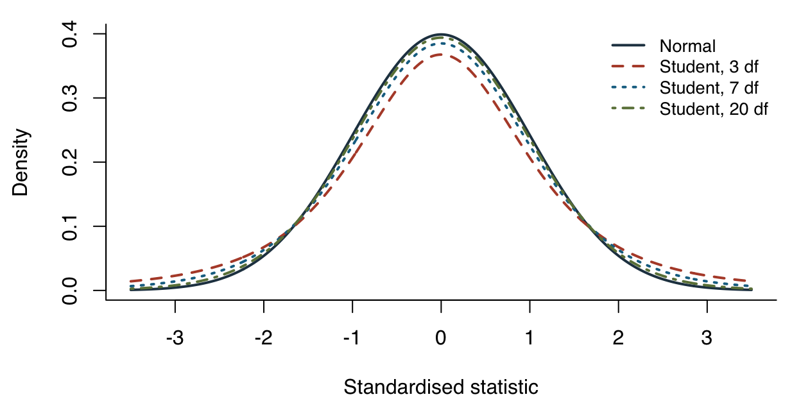
Figure 4.4: Student distributions approach the standard normal as the degrees of freedom increase. Small degrees of freedom imply heavier tails and larger critical values.
Equation (4.10) turns the distance between \(b_k\) and \(\beta_k\) into a probability statement and therefore supports confidence intervals and tests. For example, if \(\sqrt{v_k s^2}=1\) and \(n-K=10\), the probability that \(b_k\) lies below \(\beta_k-\) 4.587 \(\times \sqrt{v_k s^2}\) or above \(\beta_k+\) 4.587 \(\times \sqrt{v_k s^2}\) is 0.1%.
That means for instance that, under the assumption that \(\beta_k=0\), it would be extremely unlikely to have obtained \(b_k/\sqrt{v_k s^2}\) smaller than -4.587 or larger than 4.587. More generally, this shows that the t-statistic, i.e., the ratio \(b_k/\sqrt{v_k s^2}\), is the test statistic associated with the null hypothesis: \[ H_0: \beta_k=0. \] Under the Gaussian model and the null hypothesis, the test statistic follows a Student-t distribution with \(n-K\) degrees of freedom. Regression outputs routinely report an estimate divided by its standard error. For empirical applications, the appropriate standard error depends on the variance and dependence assumptions; Section 4.6.4 develops alternatives to the conventional formula.
Example 4.5 (Rainfall and daily accidents) Return to the Paris observations in Example 4.1. We start with a simple regression: \[ \text{Accidents}_d=\alpha+\beta\frac{\text{Rainfall}_d}{10}+\varepsilon_d. \] The division by ten makes \(\beta\) the difference in fitted daily accident counts associated with 10 additional millimetres of rain.
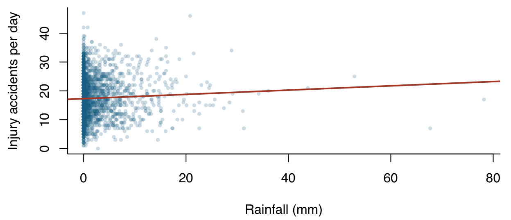
Figure 4.5: Rainfall and daily injury accidents in Paris, 2011–2019. Each point is one day; overlapping points appear darker. The line is fitted to all 3,287 days.
Code
| Term | Estimate |
|---|---|
| Intercept | 17.292 |
| Rainfall (per 10 mm) | 0.743 |
The intercept, 17.29, is the fitted number of accidents on a day with no rain. The rainfall slope is 0.74 accidents per 10 mm. Thus the fitted difference between a day with 20 mm and a day with 10 mm is this slope. The points remain widely dispersed around the line: rainfall alone explains little of the variation across days.
Here we focus on fitting and interpreting the line. Daily observations can be dependent, so we postpone standard errors, tests and confidence intervals for this regression to Example 4.15.
This first line makes no calendar adjustment. Section 4.3.2 explains the role of controls using a separate electricity application; Example 4.15 also considers calendar controls for these daily accident counts.
Returning to the Gaussian model considered above, the size-\(\alpha\) critical region for the exact Student test is: \[ \left]-\infty,-\Phi^{-1}_{t(n-K)}\left(1-\frac{\alpha}{2}\right)\right] \cup \left[\Phi^{-1}_{t(n-K)}\left(1-\frac{\alpha}{2}\right),+\infty\right[. \]
We recall that the p-value is defined as the probability that \(|Z| > |t|\), where \(t\) is the (computed) t-statistics and where \(Z \sim t(n-K)\). That is, in the context of the t-test, the p-value is given by \(2(1 - \Phi_{t(n-K)}(|t_k|))\). See this webpage for details regarding the link between critical regions, p-value, and test outcomes.
Now, suppose we want to compute a (symmetrical) confidence interval \([I_{d,1-\alpha},I_{u,1-\alpha}]\) that is such that \(\mathbb{P}(\beta_k \in [I_{d,1-\alpha},I_{u,1-\alpha}])=1-\alpha\). That is, we want to have: \(\mathbb{P}(\beta_k < I_{d,1-\alpha})=\frac{\alpha}{2}\) and \(\mathbb{P}(\beta_k > I_{u,1-\alpha})=\frac{\alpha}{2}\). Let us focus on \(I_{d,1-\alpha}\) to start with. Using Eq. (4.10), i.e., \(t_k = \frac{b_k - \beta_k}{\sqrt{s^2v_k}} \sim t(n-K)\), we have: \[\begin{eqnarray*} \mathbb{P}(\beta_k < I_{d,1-\alpha})=\frac{\alpha}{2} &\Leftrightarrow& \\ \mathbb{P}\left(\frac{b_k - \beta_k}{\sqrt{s^2v_k}} > \frac{b_k - I_{d,1-\alpha}}{\sqrt{s^2v_k}}\right)=\frac{\alpha}{2} &\Leftrightarrow& \mathbb{P}\left(t_k > \frac{b_k - I_{d,1-\alpha}}{\sqrt{s^2v_k}}\right)=\frac{\alpha}{2} \Leftrightarrow\\ 1 - \mathbb{P}\left(t_k \le \frac{b_k - I_{d,1-\alpha}}{\sqrt{s^2v_k}}\right)=\frac{\alpha}{2} &\Leftrightarrow& \frac{b_k - I_{d,1-\alpha}}{\sqrt{s^2v_k}} = \Phi^{-1}_{t(n-K)}\left(1-\frac{\alpha}{2}\right), \end{eqnarray*}\] where \(\Phi_{t(n-K)}(\alpha)\) is the c.d.f. of the \(t(n-K)\) distribution (Table 9.2).
Doing the same for \(I_{u,1-\alpha}\), we obtain: \[\begin{eqnarray*} &&[I_{d,1-\alpha},I_{u,1-\alpha}] =\\ &&\left[b_k - \Phi^{-1}_{t(n-K)}\left(1-\frac{\alpha}{2}\right)\sqrt{s^2v_k},b_k + \Phi^{-1}_{t(n-K)}\left(1-\frac{\alpha}{2}\right)\sqrt{s^2v_k}\right]. \end{eqnarray*}\]
4.2.5 Testing a set of linear restrictions
A t-test concerns one coefficient or one linear combination. Many economic hypotheses impose several restrictions at once, so we next test whether \(J\) linear restrictions are jointly consistent with the data: \[\begin{equation}\label{eq:restrictions} \begin{array}{ccc} r_{1,1} \beta_1 + \dots + r_{1,K} \beta_K &=& q_1\\ \vdots && \vdots\\ r_{J,1} \beta_1 + \dots + r_{J,K} \beta_K &=& q_J. \end{array} \end{equation}\] Assume that the \(J\) restrictions are linearly independent. In matrix form, we get: \[\begin{equation} \mathbf{R}\boldsymbol\beta = \mathbf{q}. \end{equation}\]
Define the discrepancy vector \(\mathbf{m} = \mathbf{R}\mathbf{b} - \mathbf{q}\). Under the null hypothesis: \[\begin{eqnarray*} \mathbb{E}(\mathbf{m}|\mathbf{X}) &=& \mathbf{R}\boldsymbol\beta - \mathbf{q} = 0 \quad \mbox{and} \\ \mathbb{V}ar(\mathbf{m}|\mathbf{X}) &=& \mathbf{R} \mathbb{V}ar(\mathbf{b}|\mathbf{X}) \mathbf{R}'. \end{eqnarray*}\]
With these notations, the assumption to test is: \[\begin{equation} \boxed{H_0: \mathbf{R}\boldsymbol\beta - \mathbf{q} = 0 \mbox{ against } H_1: \mathbf{R}\boldsymbol\beta - \mathbf{q} \ne 0.}\tag{4.12} \end{equation}\]
Under Hypotheses 4.1 to 4.4, we have \(\mathbb{V}ar(\mathbf{m}|\mathbf{X}) = \sigma^2 \mathbf{R} (\mathbf{X}'\mathbf{X})^{-1} \mathbf{R}'\) (see Prop. 4.3). If we add the normality assumption (Hypothesis 4.5), we have: \[\begin{equation} W = \mathbf{m}'\mathbb{V}ar(\mathbf{m}|\mathbf{X})^{-1}\mathbf{m} \sim \chi^2(J). \tag{4.13} \end{equation}\]
If \(\sigma^2\) was known, we could then conduct a Wald test (directly exploiting Eq. (4.13)). But this is not the case in practice and we cannot compute \(W\). We can, however, approximate it be replacing \(\sigma^2\) by \(s^2\) (given in Eq. (4.9)). The distribution of this new statistic is not \(\chi^2(J)\) any more; it is an \(\mathcal{F}\) distribution (whose quantiles are shown in Table 9.4), and the test is called \(F\) test.
Proposition 4.9 Under Hypotheses 4.1 to 4.5 and if Eq. (4.12) holds, we have: \[\begin{equation} F = \frac{W}{J}\frac{\sigma^2}{s^2} = \frac{\mathbf{m}'(\mathbf{R}(\mathbf{X}'\mathbf{X})^{-1}\mathbf{R}')^{-1}\mathbf{m}}{s^2J} \sim \mathcal{F}(J,n-K),\tag{4.14} \end{equation}\] where \(\mathcal{F}\) is the distribution of the F-statistic (see Def. 9.11).
Proof. According to Eq. (4.13), \(W/J \sim \chi^2(J)/J\). Moreover, the denominator satisfies \(s^2/\sigma^2\sim\chi^2(n-K)/(n-K)\). Therefore, \(F\) is the ratio of a r.v. distributed as \(\chi^2(J)/J\) and another distributed as \(\chi^2(n-K)/(n-K)\). It remains to verify that these r.v. are independent. Under \(H_0\), we have \(\mathbf{m} = \mathbf{R}(\mathbf{b}-\boldsymbol\beta) = \mathbf{R}(\mathbf{X}'\mathbf{X})^{-1}\mathbf{X}'\boldsymbol\varepsilon\). Therefore \(\mathbf{m}'(\mathbf{R}(\mathbf{X}'\mathbf{X})^{-1}\mathbf{R}')^{-1}\mathbf{m}\) is of the form \(\boldsymbol\varepsilon'\mathbf{T}\boldsymbol\varepsilon\) with \(\mathbf{T}=\mathbf{D}'\mathbf{C}\mathbf{D}\) where \(\mathbf{D}=\mathbf{R}(\mathbf{X}'\mathbf{X})^{-1}\mathbf{X}'\) and \(\mathbf{C}=(\mathbf{R}(\mathbf{X}'\mathbf{X})^{-1}\mathbf{R}')^{-1}\). Under Hypotheses 4.1 to 4.4, the covariance between \(\mathbf{T}\boldsymbol\varepsilon\) and \(\mathbf{M}\boldsymbol\varepsilon\) is \(\sigma^2\mathbf{T}\mathbf{M} = \mathbf{0}\). Therefore, under 4.5, these variables are Gaussian variables with 0 covariance. Hence they are independent.
For large \(n-K\), the \(\mathcal{F}_{J,n-K}\) distribution converges to \(\mathcal{F}_{J,\infty}=\chi^2(J)/J\). Thus \(JF\) has an approximate \(\chi^2(J)\) distribution in large samples; \(F\) itself is approximated by \(\chi^2(J)/J\). In other words, one can approximately employ Eq. (4.13) to perform a Wald test (one just has to replace \(\sigma^2\) with \(s^2\) when computing \(\mathbb{V}ar(\mathbf{m}|\mathbf{X})\)).
The following proposition proposes another equivalent computation of the F-statistic, based on the \(R^2\) of the restricted and unrestricted linear models.
Proposition 4.10 The F-statistic defined by Eq. (4.14) is also equal to: \[\begin{equation} F = \frac{(R^2-R_*^2)/J}{(1-R^2)/(n-K)} = \frac{(SSR_{restr}-SSR_{unrestr})/J}{SSR_{unrestr}/(n-K)},\tag{4.15} \end{equation}\] where \(R_*^2\) is the coef. of determination (Eq. (4.5)) of the “restricted regression” (SSR: sum of squared residuals.)
Proof. Let’s denote by \(\mathbf{e}_*=\mathbf{y}-\mathbf{X}\mathbf{b}_*\) the vector of residuals associated to the restricted regression (i.e. \(\mathbf{R}\mathbf{b}_*=\mathbf{q}\)). We have \(\mathbf{e}_*=\mathbf{e} - \mathbf{X}(\mathbf{b}_*-\mathbf{b})\). Using \(\mathbf{e}'\mathbf{X}=0\), we get \(\mathbf{e}_*'\mathbf{e}_*=\mathbf{e}'\mathbf{e} + (\mathbf{b}_*-\mathbf{b})'\mathbf{X}'\mathbf{X}(\mathbf{b}_*-\mathbf{b}) \ge \mathbf{e}'\mathbf{e}\).
By Proposition 9.5 (in Appendix 9.2), we have: \(\mathbf{b}_*-\mathbf{b}=-(\mathbf{X}'\mathbf{X})^{-1} \mathbf{R}'\{\mathbf{R}(\mathbf{X}'\mathbf{X})^{-1}\mathbf{R}'\}^{-1}(\mathbf{R}\mathbf{b} - \mathbf{q})\). Therefore: \[ \mathbf{e}_*'\mathbf{e}_* - \mathbf{e}'\mathbf{e} = (\mathbf{R}\mathbf{b} - \mathbf{q})'[\mathbf{R}(\mathbf{X}'\mathbf{X})^{-1}\mathbf{R}']^{-1}(\mathbf{R}\mathbf{b} - \mathbf{q}). \] This implies that the F statistic defined in Prop. 4.9 is also equal to: \[ \frac{(\mathbf{e}_*'\mathbf{e}_* - \mathbf{e}'\mathbf{e})/J}{\mathbf{e}'\mathbf{e}/(n-K)}, \] which leads to the result.
The null hypothesis \(H_0\) (Eq. (4.12)) of the F-test is rejected if \(F\) —defined by Eq. (4.14) or (4.15)— is higher than \(\mathcal{F}_{1-\alpha}(J,n-K)\). (Hence, this test is a one-sided test.)
4.2.6 Large-sample properties
Exact t and F distributions rely on Gaussian errors. When normality is relaxed, large-sample approximations provide a second route to inference.
To begin with, we proceed under Hypothesis 4.1 to 4.4. (We will see, later on, how to deal with —partial— relaxations of Hypothesis 4.3 and 4.4.)
Under regularity assumptions, and under Hypotheses 4.1 to 4.4, even if the residuals are not normally-distributed, the least square estimators can be asymptotically normal and inference can be performed in the same way as in small samples when Hypotheses 4.1 to 4.5 hold. This derives from Prop. 4.11 (below). The F-test (Prop. 4.10) and the t-test (Eq. (4.10)) can then be performed.
Proposition 4.11 Under Assumptions 4.1 to 4.4, suppose that the \((\mathbf{x}_i,\varepsilon_i)\) are i.i.d. with the finite moments required below and that: \[\begin{equation} Q = \mbox{plim}_{n \rightarrow \infty} \frac{\mathbf{X}'\mathbf{X}}{n},\tag{4.16} \end{equation}\] where \(Q\) is positive definite. Then: \[\begin{equation} \sqrt{n}(\mathbf{b} - \boldsymbol\beta)\overset{d} {\rightarrow} \mathcal{N}\left(0,\sigma^2Q^{-1}\right).\tag{4.17} \end{equation}\]
Proof. Since \(\mathbf{b} = \boldsymbol\beta + \left( \frac{\mathbf{X}'\mathbf{X}}{n}\right)^{-1}\left(\frac{\mathbf{X}'\boldsymbol\varepsilon}{n}\right)\), we have: \(\sqrt{n}(\mathbf{b} - \boldsymbol\beta) = \left( \frac{\mathbf{X}'\mathbf{X}}{n}\right)^{-1} \left(\frac{1}{\sqrt{n}}\right)\mathbf{X}'\boldsymbol\varepsilon\). Since \(f:A \rightarrow A^{-1}\) is continuous at every nonsingular matrix, \(\mbox{plim}_{n \rightarrow \infty} \left(\frac{\mathbf{X}'\mathbf{X}}{n}\right)^{-1} = \mathbf{Q}^{-1}\) (see Prop. 9.12). Let us denote by \(V_i\) the vector \(\mathbf{x}_i \varepsilon_i\). Because the \((\mathbf{x}_i,\varepsilon_i)\)’s are independent, the \(V_i\)’s are independent as well. Their covariance matrix is \(\sigma^2\mathbb{E}(\mathbf{x}_i \mathbf{x}_i')=\sigma^2Q\). Applying the multivariate central limit theorem on vectors \(V_i\) gives \(\sqrt{n}\left(\frac{1}{n}\sum_{i=1}^n \mathbf{x}_i \varepsilon_i\right) = \left(\frac{1}{\sqrt{n}}\right)\mathbf{X}'\boldsymbol\varepsilon \overset{d}{\rightarrow} \mathcal{N}(0,\sigma^2Q)\). An application of Slutsky’s theorem (Prop. 9.12) then leads to the results.
In practice, \(\sigma^2\) is approximated by \(s^2=\frac{\mathbf{e}'\mathbf{e}}{n-K}\) (Eq. (4.9)) and \(\mathbf{Q}^{-1}\) by \(\left(\frac{\mathbf{X}'\mathbf{X}}{n}\right)^{-1}\). That is, the covariance matrix of the estimator is approximated by: \[\begin{equation} \boxed{\widehat{\mathbb{V}ar}(\mathbf{b}) = s^2 (\mathbf{X}'\mathbf{X})^{-1}.}\tag{4.18} \end{equation}\]
Eqs. (4.16) and (4.17) respectively correspond to convergences in probability and in distribution (see Definitions 9.16 and 9.19, respectively).
4.3 Common pitfalls in linear regressions
The preceding theory clarifies what OLS delivers when its assumptions hold. The next three cases show how the quality of estimation changes when regressors contain little independent variation, relevant variables are omitted, or irrelevant variables are added.
4.3.1 Multicollinearity
Consider the model: \(y_i = \beta_1 x_{i,1} + \beta_2 x_{i,2} + \varepsilon_i\), where all variables are zero-mean and \(\mathbb{V}ar(\varepsilon_i)=\sigma^2\). We have: \[ \mathbf{X}'\mathbf{X} = \left[ \begin{array}{cc} \sum_i x_{i,1}^2 & \sum_i x_{i,1} x_{i,2} \\ \sum_i x_{i,1} x_{i,2} & \sum_i x_{i,2}^2 \end{array}\right], \] therefore: \[\begin{eqnarray*} (\mathbf{X}'\mathbf{X})^{-1} &=& \frac{1}{\sum_i x_{i,1}^2\sum_i x_{i,2}^2 - (\sum_i x_{i,1} x_{i,2})^2} \left[ \begin{array}{cc} \sum_i x_{i,2}^2 & -\sum_i x_{i,1} x_{i,2} \\ -\sum_i x_{i,1} x_{i,2} & \sum_i x_{i,1}^2 \end{array}\right]. \end{eqnarray*}\] The reciprocal of the upper-left entry of \((\mathbf{X}'\mathbf{X})^{-1}\) is: \[\begin{equation} \sum_i x_{i,1}^2 - \frac{(\sum_i x_{i,1} x_{i,2})^2}{\sum_i x_{i,2}^2} = \sum_i x_{i,1}^2(1 - correl_{1,2}^2),\tag{4.19} \end{equation}\] where \(correl_{1,2}\) is the sample correlation between \(\mathbf{x}_{1}\) and \(\mathbf{x}_{2}\).
Considering the whole matrix, we have: \[\begin{eqnarray*} (\mathbf{X}'\mathbf{X})^{-1} &=& \frac{1}{1 - correl_{1,2}^2}\left[ \begin{array}{cc} \frac{1}{\sum_i x_{i,1}^2}& - \frac{\sum_i x_{i,1} x_{i,2}}{\sum_i x_{i,1}^2\sum_i x_{i,2}^2}\\ - \frac{\sum_i x_{i,1} x_{i,2}}{\sum_i x_{i,1}^2\sum_i x_{i,2}^2} & \frac{1}{\sum_i x_{i,2}^2} \end{array}\right]. \end{eqnarray*}\]
Hence, the closer to one \(|correl_{1,2}|\), the higher the variance of \(b_1\) (recall that the variance of \(b_1\) is the upper-left component of \(\sigma^2(\mathbf{X}'\mathbf{X})^{-1}\)). That is, if some of our regressors are close to a linear combination of the other ones, then the confidence intervals will tend to be wide, which typically reduces the power of the t-test (we more often fail to reject the null hypothesis that a coefficient is zero).
Coefficients as communicating vessels. Suppose two regressors move almost together, so that \(x_{i,2}\approx x_{i,1}\). Then \[ \beta_1x_{i,1}+\beta_2x_{i,2}\approx(\beta_1+\beta_2)x_{i,1}. \] The data can tell us about their combined contribution while providing much less information about how to divide it between the two coefficients. Increasing \(\beta_1\) by \(c\) and decreasing \(\beta_2\) by \(c\) changes the fitted value by only \(c(x_{i,1}-x_{i,2})\), which is small when the regressors are close. The two coefficients can compensate for one another, like communicating vessels (vases communicants). With exact equality of the regressors, their separate coefficients cannot be identified at all.
This also explains the sign of their sampling covariance. Under the homoskedastic, uncorrelated-error assumptions used above, for these two centred regressors, \[ \operatorname{Corr}(b_1,b_2\mid\mathbf{X})=-correl_{1,2}. \] Thus highly positively correlated regressors produce highly negatively correlated coefficient estimates: in repeated samples, an upward estimation error for one coefficient tends to accompany a downward error for the other. With a fixed design, the coefficients themselves are fixed unknown parameters; it is their estimators that are correlated. The negative covariance can keep the estimated sum relatively precise even when each coefficient has a wide confidence interval: \[ \operatorname{Var}(b_1+b_2\mid\mathbf{X})= \operatorname{Var}(b_1\mid\mathbf{X})+\operatorname{Var}(b_2\mid\mathbf{X}) +2\operatorname{Cov}(b_1,b_2\mid\mathbf{X}). \] The identity \(-correl_{1,2}\) need not hold for a heteroskedasticity-robust covariance matrix, but the compensating-coefficient mechanism remains useful. For negatively correlated regressors, the compensating changes instead tend to have the same sign.
Example 4.6 (Two monthly balances carrying similar information) The credit-card data (Appendix 10.4) provide a real example. Each of the 30,000 clients has July and August statement balances and a recorded September payment amount. We relate that payment to the two preceding balances. All amounts are expressed in thousands of NTD, so a slope is the change in the fitted September payment for an additional thousand NTD in a regressor.
The July and August balances have correlation 0.928. A client with a large balance in one month usually also has a large balance in the other. Either regressor alone therefore captures much of the same information about the client’s balance level.
Code
| Specification / coefficient | Estimate | SE | Lower 95% | Upper 95% |
|---|---|---|---|---|
| August alone | 0.065 | 0.003 | 0.059 | 0.072 |
| July alone | 0.058 | 0.004 | 0.051 | 0.065 |
| Both: August | 0.090 | 0.013 | 0.065 | 0.115 |
| Both: July | -0.028 | 0.013 | -0.053 | -0.002 |
When only one balance is included, its slope partly represents the information shared by the two months. Including both asks a more demanding question: how does September’s fitted payment change with August’s balance holding July’s balance fixed, or vice versa? The separate slopes change substantially, and both standard errors increase almost fourfold. The July slope even changes sign. The coefficients now divide information that either regressor could previously proxy for alone.
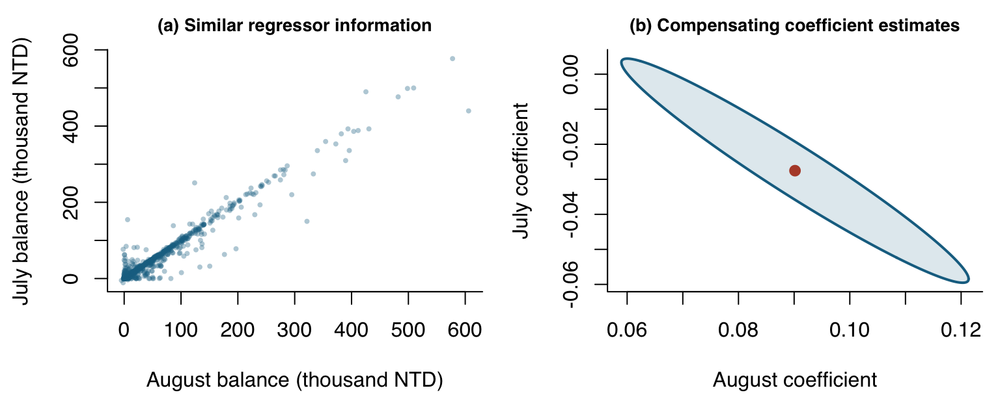
Figure 4.6: Correlated balances and compensating coefficients. Left: 1,000 clients selected at evenly spaced positions in the source file for display; the correlation and all regressions use all 30,000 clients. Right: approximate joint 95% confidence region for the two slopes, with the point estimate marked. The downward tilt shows the negative covariance of the coefficient estimates.
The estimated correlation between the coefficient estimators is -0.966: a higher August estimate can be offset by a lower July estimate. The large-sample intervals and ellipse allow unequal error variances (Section 4.6.4). They describe payment associations, rather than causal effects of changing a statement balance.
4.3.2 Omitted variables
A regression coefficient depends on what else is held fixed. A simple regression of \(Y\) on \(x\) compares observations with different values of \(x\), even when they also differ in other characteristics that matter for \(Y\). If those characteristics systematically vary with \(x\), the slope combines several relationships. Controls are additional regressors introduced to separate these relationships and make the comparison of interest more informative.
For example, meters with electric water heaters may draw more electricity partly because they are more often associated with houses than with apartments. Housing type matters for imports through floor area, occupancy and other equipment. A regression on the water-heater indicator alone can therefore attribute some housing-type differences to that indicator. Controlling for housing type lets us compare equipped and unequipped meters within the same housing category.
Why omitting a variable changes the slope. Consider a conditional-mean model with one regressor of interest \(x_i\) and one potential control \(z_i\): \[ Y_i=\alpha+\beta x_i+\gamma z_i+\varepsilon_i, \qquad \mathbb{E}(\varepsilon_i\mid x_i,z_i)=0. \] The coefficient \(\beta\) describes the change in the conditional mean associated with \(x_i\), holding \(z_i\) fixed. If we omit \(z_i\), the population slope of the simple regression becomes \[\begin{equation} \beta_{\mathrm{short}}=\beta+\gamma \frac{\mathbb{C}ov(x_i,z_i)}{\mathbb{V}ar(x_i)}.\tag{4.20} \end{equation}\] Thus omitting \(z_i\) distorts the target slope when both conditions hold: \(z_i\) contributes to the conditional mean (\(\gamma\ne0\)), and it is correlated with \(x_i\). The sign of the distortion depends on both terms. It can exaggerate, attenuate or even reverse the slope. A larger sample estimates \(\beta_{\mathrm{short}}\) more precisely; it does not remove its difference from \(\beta\).
The same mechanism applies to several omitted variables. Write the full model as \[ \mathbf{y} = \underbrace{\mathbf{X}_1}_{n \times K_1}\underbrace{\boldsymbol\beta_1}_{K_1 \times 1} + \underbrace{\mathbf{X}_2}_{n\times K_2}\underbrace{\boldsymbol\beta_2}_{K_2 \times 1} + \boldsymbol\varepsilon, \qquad \mathbb{E}(\boldsymbol\varepsilon\mid\mathbf{X}_1,\mathbf{X}_2)=\mathbf{0}. \] Here \(\mathbf{X}_1\) contains the retained regressors (including an intercept), and \(\mathbf{X}_2\) contains the omitted controls. Regressing \(\mathbf{y}\) on \(\mathbf{X}_1\) alone gives \[ \mathbf{b}_1 = \boldsymbol\beta_1 + (\mathbf{X}_1'\mathbf{X}_1)^{-1}\mathbf{X}_1'\mathbf{X}_2\boldsymbol\beta_2 + (\mathbf{X}_1'\mathbf{X}_1)^{-1}\mathbf{X}_1'\boldsymbol\varepsilon. \] Consequently, with \(\mathbf{X}=[\mathbf{X}_1,\mathbf{X}_2]\), \[ \mathbb{E}(\mathbf{b}_1\mid\mathbf{X}) = \boldsymbol\beta_1 + \underbrace{(\mathbf{X}_1'\mathbf{X}_1)^{-1}\mathbf{X}_1'\mathbf{X}_2}_{K_1 \times K_2}\boldsymbol\beta_2. \] Each column of the matrix multiplying \(\boldsymbol\beta_2\) contains the coefficients from regressing an omitted variable on the retained regressors. The bias therefore combines how the omitted variables vary with the retained regressors and how they contribute to the outcome. It vanishes when the resulting product is zero; with several omitted variables, their contributions can also offset one another.
What a control actually does. The Frisch–Waugh theorem (Theorem 4.2) gives a precise interpretation. Remove the linear associations with the controls from both \(Y\) and the regressor of interest, then regress the remaining part of \(Y\) on the remaining part of \(x\). The slope equals that in the full regression. Controls therefore change the variation used to estimate the slope: we compare observations after accounting for their measured differences in the control variables. This does not require finding observations with exactly identical control values; the adjustment relies on the specified regression model.
Controls should be chosen to match the question and the mechanisms linking the variables, rather than simply to increase \(R^2\) or obtain a desired p-value. For a causal interpretation, we need controls that make the conditional mean-zero assumption credible. Including a variable that is itself a consequence of the regressor can change the effect being estimated; adding many variables is not a substitute for deciding what should be held fixed.
Example 4.7 (Electric water heaters: the role of housing type) Do meters with an electric water heater draw more electricity from the grid? We use AEC::CHelectricity_annual (Appendix 10.5), keeping 2023 meters with all 365 daily import totals observed and no reported equipment changes.
One row is one meter over one year (1229 meters). The outcome is mean daily grid imports (kWh/day). Let \(H_i\) indicate a water heater and \(D_i\) a house rather than an apartment. Compare \[ Y_i=a+bH_i+u_i \qquad\text{and}\qquad Y_i=\alpha+\beta H_i+\gamma D_i+\varepsilon_i. \] The first slope pools housing types. The second allows a separate house baseline and estimates the equipment difference holding housing type fixed.
Code
| Specification | Water-heater coefficient (kWh/day) |
|---|---|
| Water-heater indicator only | 18.58 |
| Controlling for housing type | 7.07 |
The estimated difference falls from 18.58 to 7.07 kWh/day. Why? Houses have higher average imports for other reasons, and electric water heaters are much more common among houses: 67.2%, compared with 11.6% of apartments. The uncontrolled water-heater indicator partly proxies for housing type.
The within-type comparisons reveal what the control changes:
Code
data_table(data.frame(Type=elec_controls_cells$Type,
Without=sprintf("%.2f (%d)",elec_controls_cells$Without_mean,elec_controls_cells$Without_n),
With=sprintf("%.2f (%d)",elec_controls_cells$With_mean,elec_controls_cells$With_n),
Difference=elec_controls_cells$Difference),digits=c(0,0,0,2),row.names=FALSE,
col.names=c("Meter type","Without: mean (n)","With: mean (n)","Difference"),
caption="Mean grid imports in kWh/day; numbers of meters in parentheses.")| Meter type | Without: mean (n) | With: mean (n) | Difference |
|---|---|---|---|
| Apartment | 6.63 (804) | 13.08 (105) | 6.45 |
| Single-family house | 26.70 (105) | 34.59 (215) | 7.89 |
Within apartments, the difference is 6.45 kWh/day; within houses it is 7.89. Both are much smaller than the pooled difference. The adjusted regression imposes a common water-heater slope across housing types; its estimate lies between these two within-type differences. The weighting reflects both group size and variation in equipment status within each group.
This is also a redistribution of explanatory roles: housing differences previously attributed partly to the equipment indicator now have their own coefficient. The water-heater estimate still reflects other differences in size, occupancy and equipment; it is an adjusted association, rather than a causal installation effect. The sample excludes five changing-equipment house meters from Example 4.2.
4.3.3 Irrelevant variable
Consider the true model: \[ \mathbf{y} = \mathbf{X}_1\boldsymbol\beta_1 + \boldsymbol\varepsilon, \] while the estimated model is: \[ \mathbf{y} = \mathbf{X}_1\boldsymbol\beta_1 + \mathbf{X}_2\boldsymbol\beta_2 + \boldsymbol\varepsilon \]
The estimates are unbiased. However, adding irrelevant explanatory variables increases the variance of the estimate of \(\boldsymbol\beta_1\) (compared to the case where one uses the correct explanatory variables). This is the case unless the correlation between \(\mathbf{X}_1\) and \(\mathbf{X}_2\) is null, see Eq. (4.19).
In other words, the estimator is inefficient, i.e., there exists an alternative consistent estimator whose variance is lower. The inefficiency problem can have serious consequences when testing hypotheses such as \(H_0: \beta_1 = 0\). Due to the loss of power, we might wrongly infer that the \(\mathbf{X}_1\) variables are not “relevant” (Type-II error, False Negative).
4.4 Confidence and prediction intervals
A fitted regression can answer two different questions. What is the mean outcome at given regressor values? And what outcome might we observe for one new observation at those same values? The distinction determines which interval we need.
Let \(\mathbf{x}_0\) be a specified vector of regressor values, including the intercept. Under the linear conditional-mean model, \[ m_0 := \mathbb{E}(Y_0\mid\mathbf{x}_0)=\mathbf{x}_0'\boldsymbol\beta, \qquad \widehat m_0=\mathbf{x}_0'\mathbf{b}. \] Here the subscript 0 denotes a new observation, rather than an observation used to fit the model.
A confidence interval for the conditional mean. The target \(m_0\) is an unknown mean. The interval reflects uncertainty about the estimated coefficients. If \(\widehat{\mathbf{V}}_b\) estimates their covariance matrix, the estimated standard error of \(\widehat m_0\) is \[\begin{equation} \widehat{\operatorname{se}}(\widehat m_0) =\sqrt{\mathbf{x}_0'\widehat{\mathbf{V}}_b\mathbf{x}_0}.\tag{4.21} \end{equation}\] A large-sample 95% confidence interval is therefore \[ \widehat m_0\ \pm\ 1.96\sqrt{\mathbf{x}_0'\widehat{\mathbf{V}}_b\mathbf{x}_0}. \] Under the classical Gaussian model, using \(\widehat{\mathbf{V}}_b=s^2(\mathbf{X}'\mathbf{X})^{-1}\) and replacing 1.96 by \(\Phi^{-1}_{t(n-K)}(.975)\) gives an exact conditional interval. With a suitable covariance estimator, the large-sample construction also applies beyond that model. Both constructions require the conditional-mean specification to be correct.
A prediction interval for a new outcome. Now the target is the realised value \(Y_0=m_0+\varepsilon_0\). Even if we knew the coefficients exactly, the new disturbance would remain unknown. Under the classical Gaussian model, with the new disturbance independent of the estimation sample and having the same variance \(\sigma^2\), the prediction-error variance is \[ \operatorname{Var}(Y_0-\widehat m_0\mid\mathbf{X},\mathbf{x}_0) =\underbrace{\sigma^2}_{\text{new disturbance}} +\underbrace{\sigma^2\mathbf{x}_0'(\mathbf{X}'\mathbf{X})^{-1}\mathbf{x}_0}_{\text{coefficient uncertainty}}. \] An exact 95% prediction interval under these assumptions is \[\begin{equation} \widehat m_0\ \pm\ \Phi^{-1}_{t(n-K)}(.975)\,s \sqrt{1+\mathbf{x}_0'(\mathbf{X}'\mathbf{X})^{-1}\mathbf{x}_0}.\tag{4.22} \end{equation}\] Compared with the confidence interval for the mean, the additional 1 inside the square root accounts for the new disturbance. As the estimation sample grows, uncertainty about the mean can shrink, while the dispersion of a new outcome around that mean remains. Thus a narrow confidence interval for the mean does not imply accurate prediction of an individual outcome.
Outside the Gaussian independent-error model, a prediction interval needs additional information about the distribution of the new disturbance and its dependence on the sample. A covariance estimate for the coefficients alone is not sufficient.
Example 4.8 (Mean accident counts at a given rainfall level) Return to the simple Paris regression in Example 4.5. At rainfall \(r\) mm, the regressor vector is \(\mathbf{x}_0=(1,r/10)'\). We estimate the mean daily accident count at that rainfall level, using the fitted line as a linear approximation to the conditional mean.
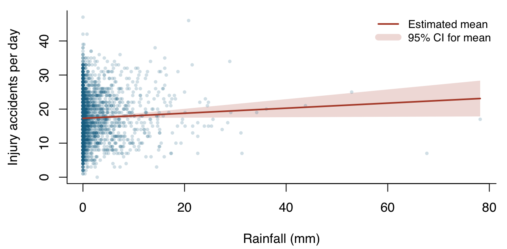
Figure 4.7: Daily injury accidents and rainfall in Paris. The line estimates the conditional mean under the linear specification; the shaded region gives pointwise 95% confidence intervals for that mean. It is not a prediction band for individual days.
The band is narrow where the data provide precise information about the line and widens at high rainfall levels, where observations are scarce. Many daily counts lie outside it: this is expected, because the band concerns the mean, not individual days. The covariance estimate allows for unequal error variances and dependence between successive days; its construction is deferred to Section 4.6.4.
These are pointwise 95% intervals: the coverage statement applies at each fixed rainfall level, not jointly to the entire curve. The band quantifies uncertainty about the fitted linear mean; it does not account for a possible failure of the linear specification. We do not draw the classical prediction interval for these count data, since its Gaussian independent-error assumptions are not justified here.
4.5 Instrumental Variables
Omitted variables are one reason why a regressor may be correlated with the error. Simultaneity and measurement error can create the same problem. When the conditional mean-zero assumption \(\mathbb{E}(\boldsymbol\varepsilon|\mathbf{X})=0\) is implausible, OLS generally fails to estimate the parameter consistently. Instrumental variables recover identifying variation from variables that are related to the endogenous regressors but orthogonal to the structural error.
Consider the following model: \[\begin{equation} y_i = \mathbf{x_i}'\boldsymbol\beta + \varepsilon_i, \quad \mbox{where } \mathbb{E}(\varepsilon_i)=0 \mbox{ and } \mathbf{x_i}\not\perp \varepsilon_i.\tag{4.23} \end{equation}\]
Let us illustrate how this situation may result in biased OLS estimate. Consider for instance the situation where: \[\begin{equation} \mathbb{E}(\varepsilon_i)=0 \quad \mbox{and} \quad \mathbb{E}(\varepsilon_i \mathbf{x_i})=\boldsymbol\gamma,\tag{4.24} \end{equation}\] in which case we have \(\mathbf{x}_i\not\perp \varepsilon_i\) (consistently with Eq. (4.23)).
By the law of large numbers, \(\mbox{plim}_{n \rightarrow \infty} \mathbf{X}'\boldsymbol\varepsilon / n = \boldsymbol\gamma\). If \(\mathbf{Q}_{xx} := \mbox{plim } \mathbf{X}'\mathbf{X}/n\), the OLS estimator is not consistent because \[ \mathbf{b} = \boldsymbol\beta + (\mathbf{X}'\mathbf{X})^{-1}\mathbf{X}'\boldsymbol\varepsilon \overset{p}{\rightarrow} \boldsymbol\beta + \mathbf{Q}_{xx}^{-1}\boldsymbol\gamma \ne \boldsymbol\beta. \]
Let us now introduce the notion of instruments.
Definition 4.2 (Instrumental variables) The \(L\)-dimensional vector \(\mathbf{z}_i\) is a valid instrument vector for the linear model if:
- \(\operatorname{rank}\mathbb E(\mathbf{z}_i\mathbf{x}_i')=K\) (relevance);
- \(\mathbb E(\mathbf{z}_i\varepsilon_i)=\mathbf{0}\) (exogeneity);
- \(\mathbb E(\mathbf{z}_i\mathbf{z}_i')\) is finite and positive definite.
Included exogenous regressors also enter the instrument vector. The stronger condition \(\mathbb E(\varepsilon_i\mid\mathbf{z}_i)=0\) is sufficient for (b), but the linear IV moment condition itself does not require it.
Point (a) implies in particular that the dimension of \(\mathbf{z}_i\) has to be at least as large as that of \(\mathbf{x}_i\). If \(\mathbf{z}_i\) is a valid set of instruments, we have: \[ \mbox{plim}\left( \frac{\mathbf{Z}'\mathbf{y}}{n} \right) =\mbox{plim}\left( \frac{\mathbf{Z}'(\mathbf{X}\boldsymbol\beta + \boldsymbol\varepsilon)}{n} \right) = \mbox{plim}\left( \frac{\mathbf{Z}'\mathbf{X}}{n} \right)\boldsymbol\beta. \] Indeed, by the law of large numbers, \(\frac{\mathbf{Z}'\boldsymbol\varepsilon}{n} \overset{p}{\rightarrow}\mathbb{E}(\mathbf{z}_i\varepsilon_i)=0\).
If \(L = K\), the matrix \(\frac{\mathbf{Z}'\mathbf{X}}{n}\) is of dimension \(K \times K\) and we have: \[ \left[\mbox{plim }\left( \frac{\mathbf{Z}'\mathbf{X}}{n} \right)\right]^{-1}\mbox{plim }\left( \frac{\mathbf{Z}'\mathbf{y}}{n} \right) = \boldsymbol\beta. \] By continuity of matrix inversion at a nonsingular limit: \(\left[\mbox{plim }\left( \frac{\mathbf{Z}'\mathbf{X}}{n} \right)\right]^{-1}=\mbox{plim }\left( \frac{\mathbf{Z}'\mathbf{X}}{n} \right)^{-1}\). The Slutsky Theorem (Prop. 9.12) further implies that: \[ \mbox{plim }\left( \frac{\mathbf{Z}'\mathbf{X}}{n} \right)^{-1} \mbox{plim }\left( \frac{\mathbf{Z}'\mathbf{y}}{n} \right) = \mbox{plim }\left( \left( \frac{\mathbf{Z}'\mathbf{X}}{n} \right)^{-1} \frac{\mathbf{Z}'\mathbf{y}}{n} \right). \] Hence \(\mathbf{b}_{iv}\) is consistent if it is defined by: \[ \boxed{\mathbf{b}_{iv} = (\mathbf{Z}'\mathbf{X})^{-1}\mathbf{Z}'\mathbf{y}.} \]
Proposition 4.12 (Asymptotic distribution of the IV estimator) Under valid instruments, the rank and central-limit conditions, and homoskedastic, uncorrelated structural errors with variance \(\sigma^2\), for \(L=K\) the limiting distribution is: \[ \sqrt n(\mathbf{b}_{iv}-\boldsymbol\beta) \overset{d}{\rightarrow} \mathcal{N}\left(\mathbf{0},\sigma^2\left[Q_{xz}Q_{zz}^{-1}Q_{zx}\right]^{-1}\right) \] where \(\mbox{plim } \mathbf{Z}'\mathbf{Z}/n =: \mathbf{Q}_{zz}\), \(\mbox{plim } \mathbf{Z}'\mathbf{X}/n =: \mathbf{Q}_{zx}\), \(\mbox{plim } \mathbf{X}'\mathbf{Z}/n =: \mathbf{Q}_{xz}\).
Proof. The proof is very similar to that of Prop. 4.11, the starting point being that \(\mathbf{b}_{iv} = \boldsymbol\beta + (\mathbf{Z}'\mathbf{X})^{-1}\mathbf{Z}'\boldsymbol\varepsilon\).
When \(L=K\), we have: \[ \left[Q_{xz}Q_{zz}^{-1}Q_{zx}\right]^{-1}=Q_{zx}^{-1}Q_{zz}Q_{xz}^{-1}. \] In practice, to estimate \(\mathbb{V}ar(\mathbf{b}_{iv}) = \frac{\sigma^2}{n}Q_{zx}^{-1}Q_{zz}Q_{xz}^{-1}\), we replace \(\sigma^2\) by: \[ s_{iv}^2 = \frac{1}{n}\sum_{i=1}^{n} (y_i - \mathbf{x}_i'\mathbf{b}_{iv})^2. \]
What about when \(L > K\)? In this case, we proceed as follows:
- Regress \(\mathbf{X}\) on the space spanned by \(\mathbf{Z}\) and
- Regress \(\mathbf{y}\) on the fitted values \(\hat{\mathbf{X}}:=\mathbf{Z}(\mathbf{Z}'\mathbf{Z})^{-1}\mathbf{Z}'\mathbf{X}\).
This two-step approach is called Two-Stage Least Squares (2SLS). It results in: \[\begin{equation} \boxed{\mathbf{b}_{iv} = [\mathbf{X}'\mathbf{Z}(\mathbf{Z}'\mathbf{Z})^{-1}\mathbf{Z}'\mathbf{X}]^{-1}\mathbf{X}'\mathbf{Z}(\mathbf{Z}'\mathbf{Z})^{-1}\mathbf{Z}'\mathbf{Y}.} \tag{4.25} \end{equation}\]
Under the same covariance and regularity assumptions, Prop. 4.12 also gives the normal approximation for the 2SLS estimator in Eq. (4.25). Robust inference is discussed in Section 4.6.
If the instruments do not properly satisfy Condition (a) in Def. 4.2 (i.e. if \(\mathbf{x}_i\) and \(\mathbf{z}_i\) are only loosely related), the instruments are said to be weak (see, e.g., Stock and Yogo (2005), available here or Andrews, Stock, and Sun (2019)). With one endogenous regressor, a first-stage joint test assesses whether the excluded instruments predict it after the included controls. A large statistic provides evidence of relevance, but a small p-value alone does not ensure reliable IV inference. The appropriate diagnostic and its reference values depend on the error structure and number of instruments. Instrument relevance and the exclusion restriction are separate questions.
The Durbin-Wu-Hausman test (Durbin (1954), Wu (1973), Hausman (1978)) can be used to test if IV necessary. (IV techniques are required if \(\mbox{plim}_{n \rightarrow \infty} \mathbf{X}'\boldsymbol\varepsilon / n \ne 0\).) Hausman (1978) proposes a test of the efficiency of estimators. Under the null hypothesis two estimators, \(\mathbf{b}_0\) and \(\mathbf{b}_1\), are consistent but \(\mathbf{b}_0\) is (asymptotically) efficient relative to \(\mathbf{b}_1\). Under the alternative hypothesis, \(\mathbf{b}_1\) (IV in the present case) remains consistent but not \(\mathbf{b}_0\) (OLS in the present case). Under the maintained validity of the instruments and the test’s covariance assumptions, rejection provides evidence against the consistency of OLS. It does not validate the instruments; failure to reject does not establish exogeneity.
The test statistic is: \[ H = (\mathbf{b}_1 - \mathbf{b}_0)' MPI(\mathbb{V}ar(\mathbf{b}_1) - \mathbb{V}ar(\mathbf{b}_0))(\mathbf{b}_1 - \mathbf{b}_0), \] where \(MPI\) is the Moore-Penrose pseudo-inverse. Under the null hypothesis, \(H \sim \chi^2(q)\), where \(q\) is the rank of \(\mathbb{V}ar(\mathbf{b}_1) - \mathbb{V}ar(\mathbf{b}_0)\).
Example 4.9 (Using supply shifts to estimate demand) Suppose a market clears where supply equals demand. Let \(p_t\) and \(q_t\) denote log price and log quantity, \(w_t\) an income variable, and \(z_t\) a favourable supply shifter: \[ q_t^d=1-p_t+w_t+u_t,\qquad q_t^s=-1+p_t+z_t+v_t. \] The four shocks \(w_t,z_t,u_t,v_t\) are independent standard normal variables. The demand elasticity is therefore \(-1\). Equilibrium gives \[ p_t=\frac{2+w_t-z_t+u_t-v_t}{2}. \] Price contains the demand shock \(u_t\), so regressing quantity on price and income violates exogeneity. By contrast, \(z_t\) shifts supply without entering demand or sharing its unobserved shocks. It is a valid excluded instrument by construction. Figure 4.8 shows why this distinction matters.
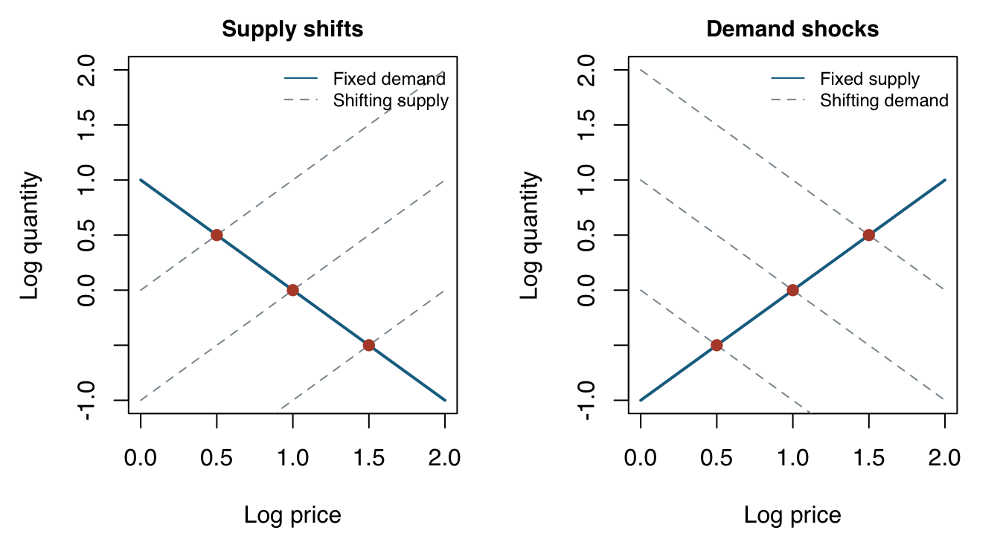
Figure 4.8: Equilibrium movements and identification. Left: exogenous supply shifts trace a fixed demand curve. Right: demand shocks move both price and quantity along a fixed supply curve. Orange dots mark equilibria. Price therefore responds to demand shocks as well as to excluded supply shifters.
In 5,000 simulated market equilibria, the two estimators give:
Code
# Simulated illustration, not observations from an AEC dataset.
library(AER)
iv_n <- 5000L
iv_market <- data.frame(income=rnorm(iv_n),supply_shifter=rnorm(iv_n),
demand_shock=rnorm(iv_n),supply_shock=rnorm(iv_n))
iv_market$price <- with(iv_market,(2+income-supply_shifter+demand_shock-supply_shock)/2)
iv_market$quantity <- with(iv_market,1-price+income+demand_shock)
iv_market_ols <- lm(quantity~price+income,data=iv_market)
iv_market_fit <- ivreg(quantity~price+income | income+supply_shifter,data=iv_market)
data_table(data.frame(Method=c("OLS","IV"),
`Price coefficient`=c(coef(iv_market_ols)["price"],coef(iv_market_fit)["price"]),
`True elasticity`=c(-1,-1),check.names=FALSE),digits=3,row.names=FALSE)| Method | Price coefficient | True elasticity |
|---|---|---|
| OLS | -0.333 | -1 |
| IV | -0.978 | -1 |
OLS mixes supply and demand movements: its price coefficient converges to \(-1+2/3=-1/3\). IV uses the supply-induced price variation and converges to the demand elasticity \(-1\). The simulation makes the identifying assumption transparent because we specified the independent shocks ourselves. With observed data, that assumption needs an economic argument.
Example 4.10 (How does Swiss hydropower respond to price?) A reservoir operator can generate electricity today or keep water for later. A higher current price should encourage generation, other opportunities held fixed. But price and production are jointly determined: abundant water can increase Swiss production and lower the price. OLS can therefore mix a response to price with shifts in supply.
We use 3,288 days of observed Swiss electricity-market data, 2016–2024, from AEC::CHhydro (Appendix 10.7). The outcome \(Q_t\) is the average power generated by reservoir plants that day, in MW. The explanatory variable \(P_t\) is the Swiss wholesale price, measured in units of 10 EUR/MWh. The coefficient \(\beta\) in
\[
Q_t=\alpha+\beta P_t+\boldsymbol\gamma'\mathbf{W}_t+u_t
\]
therefore measures the change in generation, in MW, associated with a 10 EUR/MWh increase in price. This is a production decision, distinct from household electricity consumption or electricity used for pumping.
The instrument. Let \(Z_t\) be German wind generation, in GW. More wind adds supply outside Switzerland. Through the interconnected market it can lower the price available to Swiss producers and the residual demand they face. In the diagram of Example 4.9, supply shifts identified demand; here an outside-market shift helps trace Swiss supply. The proposed chain is \[ \text{more German wind}\quad\longrightarrow\quad \text{lower Swiss price}\quad\longrightarrow\quad \text{less Swiss reservoir generation}. \]
Both stages include the same controls \(\mathbf{W}_t\): month-by-year indicators, weekday indicators, and temperatures and their squares at Sion and Güttingen. They account for market conditions, calendar patterns and temperature-related electricity needs. The two stations are weather proxies; full details are in the appendix. We keep all days, including the six with negative average prices, and estimate the model in levels.
Code
data(CHhydro,package="AEC")
hydro <- CHhydro
hydro$month_year <- factor(format(hydro$date,"%Y-%m"))
hydro$weekday <- factor(as.POSIXlt(hydro$date,tz="UTC")$wday)
hydro$price_10 <- hydro$price_eur_mwh/10
hydro$q_mw <- hydro$reservoir_mw
hydro$wind_de_gw <- hydro$wind_de_mw/1000
hydro$offshore_gw <- hydro$wind_offshore_de_mw/1000
hydro_controls <- paste("month_year+weekday+temperature_sio_c+I(temperature_sio_c^2)",
"+temperature_gut_c+I(temperature_gut_c^2)")
hydro_ols <- lm(as.formula(paste("q_mw~price_10+",hydro_controls)),hydro)
hydro_first <- lm(as.formula(paste("price_10~wind_de_gw+",hydro_controls)),hydro)
hydro_reduced <- lm(as.formula(paste("q_mw~wind_de_gw+",hydro_controls)),hydro)
hydro_iv <- AER::ivreg(as.formula(paste("q_mw~price_10+",hydro_controls,
"|wind_de_gw+",hydro_controls)),data=hydro)
hydro_pi <- unname(coef(hydro_first)["wind_de_gw"])
hydro_rho <- unname(coef(hydro_reduced)["wind_de_gw"])
hydro_b_ols <- unname(coef(hydro_ols)["price_10"])
hydro_b_iv <- unname(coef(hydro_iv)["price_10"])
stopifnot(nobs(hydro_iv)==3288L,sum(hydro$price_eur_mwh<0)==6L,
isTRUE(all.equal(hydro_b_iv,hydro_rho/hydro_pi)))
data_table(data.frame(Method=c("OLS","IV"),
`Generation change for +10 EUR/MWh (MW)`=c(hydro_b_ols,hydro_b_iv),
check.names=FALSE),digits=1,row.names=FALSE)| Method | Generation change for +10 EUR/MWh (MW) |
|---|---|
| OLS | 47.7 |
| IV | 344.7 |
The IV estimate is approximately 345 MW per 10 EUR/MWh, compared with 48 MW by OLS. To see where it comes from, consider the two regressions on wind. After the controls, an additional GW of German wind predicts a Swiss price change of -0.61 EUR/MWh and a generation change of -21.1 MW. Both are negative, so their ratio gives a positive production response to price.
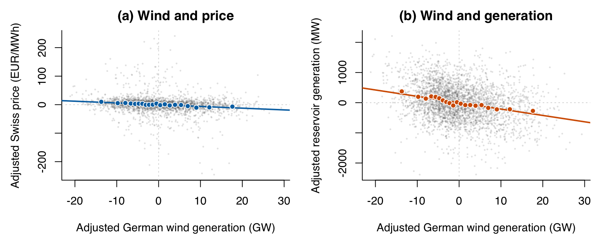
Figure 4.9: The two comparisons behind the Swiss hydropower IV estimate. Both panels remove the calendar and temperature controls. Grey points are daily observations; coloured points are means within 20 wind bins of approximately equal size. Lines use all 3,288 days. The first-stage and reduced-form slopes are both negative.
What must we assume? Conditional on the controls, German wind must affect Swiss reservoir generation through the Swiss price, rather than through other determinants of the production decision. Common weather and water availability can challenge this assumption. Transmission constraints, wind curtailment and expected future prices can matter too: an operator’s choice to store water depends on future opportunities. The observed slopes support the proposed mechanism but do not prove exclusion.
The table reports point estimates. Example 4.16, after the discussion of serial dependence, adds appropriate uncertainty estimates and sensitivity checks. Those checks also show why we should interpret the coefficient as a short-run dispatch response, rather than a universal technological elasticity.
Example 4.11 (Measurement error and a second measurement) A measured regressor can be endogenous even without simultaneous decisions. Suppose the true relationship is \(y_i=1+2x_i^*+\varepsilon_i\), but we observe a noisy measurement \(x_i=x_i^*+v_i\). Substitution gives \(y_i=1+2x_i+(\varepsilon_i-2v_i)\): the observed regressor and the new error share \(v_i\).
A second measurement \(z_i=x_i^*+u_i\) supplies an instrument if it shares the true signal but not the measurement error. For this simulation, assume \(x_i^*,\varepsilon_i,v_i,u_i\) are mutually independent standard normal variables. We compare OLS with IV, then verify the two-stage coefficient directly.
Code
iv_measure <- data.frame(latent=rnorm(5000),noise_x=rnorm(5000),
noise_z=rnorm(5000),error=rnorm(5000))
iv_measure$x <- with(iv_measure,latent+noise_x)
iv_measure$z <- with(iv_measure,latent+noise_z)
iv_measure$y <- with(iv_measure,1+2*latent+error)
iv_measure_ols <- lm(y~x,data=iv_measure)
iv_measure_fit <- AER::ivreg(y~x | z,data=iv_measure)
iv_measure_first <- lm(x~z,data=iv_measure)
iv_measure$x_hat <- fitted(iv_measure_first)
iv_measure_manual <- lm(y~x_hat,data=iv_measure)
data_table(data.frame(Method=c("OLS","Manual two-stage coefficient","2SLS"),
Slope=c(coef(iv_measure_ols)["x"],coef(iv_measure_manual)["x_hat"],
coef(iv_measure_fit)["x"])),digits=3,row.names=FALSE)| Method | Slope |
|---|---|
| OLS | 0.989 |
| Manual two-stage coefficient | 2.003 |
| 2SLS | 2.003 |
Code
Since the latent variable and the measurement noise have unit variance, the OLS slope converges to 1 instead of the true value 2. IV corrects the attenuation under the stated assumptions. The manual second regression reproduces the 2SLS coefficient; its ordinary OLS standard error would be inappropriate. Use the IV covariance estimator for inference.
4.6 General Regression Model (GRM) and robust covariance matrices
The OLS and IV sections focused primarily on whether coefficients are identified and consistently estimated. Inference introduces a separate issue: the familiar covariance formula assumes homoskedastic, mutually uncorrelated errors. The general regression model allows a richer error covariance structure and leads to appropriate standard errors when those assumptions fail.
4.6.1 Presentation of the General Regression Model (GRM)
It will prove useful to introduce the following notation: \[\begin{eqnarray} \mathbb{V}ar(\boldsymbol\varepsilon | \mathbf{X}) = \mathbb{E}(\boldsymbol\varepsilon \boldsymbol\varepsilon'| \mathbf{X}) &=& \boldsymbol\Sigma. \tag{4.26} \end{eqnarray}\]
Note that Eq. (4.26) is more general than Hypothesis 4.3 and 4.4 because the diagonal entries of \(\boldsymbol\Sigma\) may be different (as opposed to under Hypothesis 4.3), and the non-diagonal entries of \(\boldsymbol\Sigma\) can be non-null (as opposed to under Hypothesis 4.4).
Definition 4.3 (General Regression Model (GRM)) Hypothesis 4.1 and 4.2, together with Eq. (4.26), form the General Regression Model (GRM) framework.
Naturally, a regression model where Hypotheses 4.1 to 4.4 hold is a specific case of the GRM framework.
The GRM context notably encompasses situations of heteroskedasticity and autocorrelation:
Heteroskedasticity: \[\begin{equation} \boldsymbol\Sigma = \left[ \begin{array}{cccc} \sigma_1^2 & 0 & \dots & 0 \\ 0 & \sigma_2^2 & & 0 \\ \vdots && \ddots& \vdots \\ 0 & \dots & 0 & \sigma_n^2 \end{array} \right]. \tag{4.27} \end{equation}\]
Autocorrelation: \[\begin{equation} \boldsymbol\Sigma = \sigma^2 \left[ \begin{array}{cccc} 1 & \rho_{2,1} & \dots & \rho_{n,1} \\ \rho_{2,1} & 1 & & \vdots \\ \vdots && \ddots& \rho_{n,n-1} \\ \rho_{n,1} & \rho_{n,2} & \dots & 1 \end{array} \right]. \tag{4.28} \end{equation}\]
Example 4.12 (Auto-regressive processes) Autocorrelation is common in time-series contexts (see Section 8). In a time-series context, subscript \(i\) refers to a date.
Assume for instance that: \[\begin{equation} y_i = \mathbf{x}_i' \boldsymbol\beta + \varepsilon_i \tag{4.29} \end{equation}\] with \[\begin{equation} \varepsilon_i = \rho \varepsilon_{i-1} + v_i, \quad v_i \sim \mathcal{N}(0,\sigma_v^2).\tag{4.30} \end{equation}\] If \(|\rho|<1\) and the errors start in their stationary distribution, their covariance matrix is: \[\begin{equation} \boldsymbol\Sigma =\frac{ \sigma_v^2}{1 - \rho^2} \left[ \begin{array}{cccc} 1 & \rho & \dots & \rho^{n-1} \\ \rho & 1 & & \vdots \\ \vdots && \ddots& \rho \\ \rho^{n-1} & \rho^{n-2} & \dots & 1 \end{array} \right].\tag{4.31} \end{equation}\]
In some cases —in particular when one assumes a parametric formulation for \(\boldsymbol\Sigma\)— one can determine a better (more accurate) estimator than the OLS one. This approach is called Generalized Least Squares (GLS), which we present below.
4.6.2 Generalized Least Squares
First suppose \(\boldsymbol\Sigma\) is known. Because \(\boldsymbol\Sigma\) is symmetric positive, it admits a spectral decomposition of the form \(\boldsymbol\Sigma = \mathbf{C} \boldsymbol\Lambda \mathbf{C}'\), where \(\mathbf{C}\) is an orthogonal matrix (i.e. \(\mathbf{C}\mathbf{C}'=\mathbf{Id}\)) and \(\boldsymbol\Lambda\) is a diagonal matrix (the diagonal entries are the eigenvalues of \(\boldsymbol\Sigma\)).
We have \(\boldsymbol\Sigma = (\mathbf{P}\mathbf{P}')^{-1}\) with \(\mathbf{P} = \mathbf{C}\boldsymbol\Lambda^{-1/2}\). Consider the transformed model: \[ \mathbf{P}'\mathbf{y} = \mathbf{P}'\mathbf{X}\boldsymbol\beta + \mathbf{P}'\boldsymbol\varepsilon \quad \mbox{or} \quad \mathbf{y}^* = \mathbf{X}^*\boldsymbol\beta + \boldsymbol\varepsilon^*. \] The variance of \(\boldsymbol\varepsilon^*\) is the identity matrix \(\mathbf{Id}\). In the transformed model, OLS is BLUE (Gauss-Markov Theorem 4.1).
The Generalized least squares estimator of \(\boldsymbol\beta\) is: \[\begin{equation} \boxed{\mathbf{b}_{GLS} = (\mathbf{X}'\boldsymbol\Sigma^{-1}\mathbf{X})^{-1}\mathbf{X}'\boldsymbol\Sigma^{-1}\mathbf{y}.}\tag{4.32} \end{equation}\] We have: \[ \mathbb{V}ar(\mathbf{b}_{GLS}|\mathbf{X}) = (\mathbf{X}'\boldsymbol\Sigma^{-1}\mathbf{X})^{-1}. \]
However, in general, \(\boldsymbol\Sigma\) is unknown. The GLS estimator is then said to be infeasible. Some structure is required. Assume \(\boldsymbol\Sigma\) admits a parametric form \(\boldsymbol\Sigma(\theta)\). The estimation becomes feasible (FGLS) if one replaces \(\boldsymbol\Sigma(\theta)\) by \(\boldsymbol\Sigma(\hat\theta)\), where \(\hat\theta\) is a consistent estimator of \(\theta\). In that case, the FGLS is asymptotically efficient (see Example 4.13).
When we do not specify a parametric model for \(\boldsymbol\Sigma\), we can retain OLS, or IV when valid instruments are needed, and estimate its covariance robustly. The coefficient estimator and the covariance estimator answer different questions: the former determines the fitted relationship; the latter determines the reported uncertainty. Robust standard errors do not repair endogeneity.
Example 4.13 (GLS in the auto-correlation case) Return to the stationary AR(1) errors in Example 4.12. Fit the original regression, then regress its residuals on their one-period lags to estimate \(\rho\). Under the model’s regularity conditions, the residual regression also estimates the innovation variance. Substituting these estimates into Eq. (4.31) gives a feasible GLS procedure. Its efficiency gain depends on the AR(1) covariance specification being appropriate (Cochrane and Orcutt (1949)).
4.6.3 Asymptotic properties of the OLS estimator in the GRM framework
Since \(\mathbf{b} = \boldsymbol\beta + \left(\mathbf{X}'\mathbf{X}\right)^{-1} \mathbf{X}'\boldsymbol\varepsilon\) and \(\mathbb{V}ar(\boldsymbol\varepsilon|\mathbf{X})=\boldsymbol\Sigma\), we have: \[\begin{equation} \mathbb{V}ar(\mathbf{b}|\mathbf{X}) = \frac{1}{n}\left(\frac{1}{n}\mathbf{X}'\mathbf{X}\right)^{-1}\left(\frac{1}{n}\mathbf{X}'\boldsymbol\Sigma\mathbf{X}\right)\left(\frac{1}{n}\mathbf{X}'\mathbf{X}\right)^{-1}.\tag{4.33} \end{equation}\]
Therefore, the conditional covariance matrix of the OLS estimator is not \(\sigma^2 (\mathbf{X}'\mathbf{X})^{-1}\) any longer, and using \(s^2 (\mathbf{X}'\mathbf{X})^{-1}\) for inference may be misleading. Below, we will see how to construct appropriate estimates of the covariance matrix of \(\mathbf{b}\). Before that, let us prove that the OLS estimator remains consistent in the GRM framework.
Proposition 4.13 (Consistency of the OLS estimator in the GRM framework) Under the conditional mean-zero assumption, suppose \(\mathbf{X}'\mathbf{X}/n\) converges in probability to a finite positive definite matrix and \(\mathbf{X}'\boldsymbol\Sigma\mathbf{X}/n\) converges in probability to a finite matrix. Then \(\mathbf{b}\overset p\longrightarrow\boldsymbol\beta\).
Proof. Equation (4.33) gives a conditional covariance matrix converging to zero in probability. Conditional Chebyshev bounds the probability of any fixed estimation error by a term converging to zero, capped at one. Taking expectations of this bounded term proves convergence in probability. Mean-square convergence would additionally require control of the corresponding unconditional second moments.
Prop. 4.14 gives the asymptotic distribution of the OLS estimator in the GRM framework.
Proposition 4.14 (Asymptotic distribution of the OLS estimator in the GRM framework) In addition to the preceding moment limits, assume a score central limit theorem: \(n^{-1/2}\mathbf{X}'\boldsymbol\varepsilon\overset d\longrightarrow\mathcal N(0,Q_{x\boldsymbol\Sigma x})\). If \(Q_{xx}=\mbox{plim }(\mathbf{X}'\mathbf{X}/n)\) and \(Q_{x\boldsymbol\Sigma x}=\mbox{plim }(\mathbf{X}'\boldsymbol\Sigma\mathbf{X}/n)\) are finite positive definite matrices, then: \[ \sqrt{n}(\mathbf{b}-\boldsymbol\beta) \overset{d}{\rightarrow} \mathcal{N}(0,Q_{xx}^{-1}Q_{x\boldsymbol\Sigma x}Q_{xx}^{-1}). \]
The IV estimator also features a normal asymptotic distribution:
Proposition 4.15 (Asymptotic distribution of the IV estimator in the GRM framework) Assume valid instruments, the stated rank and moment limits, and a central limit theorem for \(n^{-1/2}\mathbf{Z}'\boldsymbol\varepsilon\). Then the large-sample approximation is: \[ \mathbf{b}_{iv} \overset{a}{\sim} \mathcal{N}(\boldsymbol\beta,\mathbf{V}_{iv}), \] where \[ \mathbf{V}_{iv} = \frac{1}{n}(\mathbf{Q}^*)\mbox{ plim }\left(\frac{1}{n} \mathbf{Z}'\boldsymbol\Sigma \mathbf{Z}\right)(\mathbf{Q}^*)', \] with \[ \mathbf{Q}^* = [\mathbf{Q}_{xz}\mathbf{Q}_{zz}^{-1}\mathbf{Q}_{zx}]^{-1}\mathbf{Q}_{xz}\mathbf{Q}_{zz}^{-1}. \]
For practical purposes, one needs to have estimates of \(\boldsymbol\Sigma\) in Props. 4.14 or 4.15. The complication comes from the fact that \(\boldsymbol\Sigma\) is of dimension \(n \times n\), and its estimation —based on a sample of length \(n\)— is therefore infeasible in the general case. Notwithstanding, looking at Eq. (4.33), it appears that one can focus on the estimation of \(Q_{x\boldsymbol\Sigma x}=\mbox{plim }(\mathbf{X}'\boldsymbol\Sigma\mathbf{X}/n)\) (or \(\mbox{plim }\left(\frac{1}{n} \mathbf{Z}'\boldsymbol\Sigma \mathbf{Z}\right)\) in the IV case). This matrix being of dimension \(K \times K\), its estimation is easier.
We have: \[\begin{equation} \frac{1}{n}\mathbf{X}'\boldsymbol\Sigma\mathbf{X} = \frac{1}{n}\sum_{i=1}^{n}\sum_{j=1}^{n}\sigma_{i,j}\mathbf{x}_i\mathbf{x}'_j. \tag{4.34} \end{equation}\]
The so-called robust covariance matrices are estimates of the previous matrix. Their computation is based on the fact that if \(\mathbf{b}\) is consistent, then the \(e_i\)’s are consistent estimators of the \(\varepsilon_i\)’s.
In the following sections (4.6.4 and 4.6.5), we present two types of robust covariance matrices.
4.6.4 HAC-robust covariance matrices
When only heteroskedasticity prevails, i.e., when matrix \(\boldsymbol\Sigma\) is as in Eq. (4.27), then one can use the formula proposed by White (1980) to estimate \(\frac{1}{n}\mathbf{X}'\boldsymbol\Sigma\mathbf{X}\) (see Example 4.14). When the residuals feature both heteroskedasticity and auto-correlation, then one can use the Newey and West (1987) approach (see Example 4.15).
Example 4.14 (Heteroskedasticity) This is the case of Eq. (4.27). We have \(\sigma_{i,j}=0\) for \(i \ne j\). Hence, in this case, we then need to estimate \(\frac{1}{n}\sum_{i=1}^{n}\sigma_{i}^2\mathbf{x}_i\mathbf{x}'_i\). White (1980) has shown that, under general conditions: \[\begin{equation} \mbox{plim}\left( \frac{1}{n}\sum_{i=1}^{n}\sigma_{i}^2\mathbf{x}_i\mathbf{x}'_i \right) = \mbox{plim}\left( \frac{1}{n}\sum_{i=1}^{n}e_{i}^2\mathbf{x}_i\mathbf{x}'_i \right). \tag{4.35} \end{equation}\] The estimator of \(\frac{1}{n}\mathbf{X}'\boldsymbol\Sigma\mathbf{X}\) therefore is: \[\begin{equation} M_{HC0} = \frac{1}{n}\mathbf{X}' \left[ \begin{array}{cccc} e_1^2 & 0 & \dots & 0 \\ 0 & e_2^2 & \\ \vdots & & \ddots&0 \\ 0 & \dots & 0 & e_n^2 \end{array} \right] \mathbf{X}.\tag{4.36} \end{equation}\] where the \(e_i\) are the OLS residuals of the regression. The previous estimator is often called HC0. The HC1 estimator, due to J. MacKinnon and White (1985), is obtained by applying an adjustment factor \(n/(n-K)\) for the number of degrees of freedom (as in Prop. 4.6). That is: \[\begin{equation} M_{HC1} = \frac{n}{n-K}M_{HC0}.\tag{4.37} \end{equation}\]
We can illustrate the influence of heteroskedasticity using simulations. Consider the following model: \[ y_i = x_i + \varepsilon_i, \quad \varepsilon_i \sim \mathcal{N}(0,x_i^2), \] where the \(x_i\)’s are i.i.d. \(t(6)\).
Here is a simulated sample (\(n=200\)) of this model:
Code
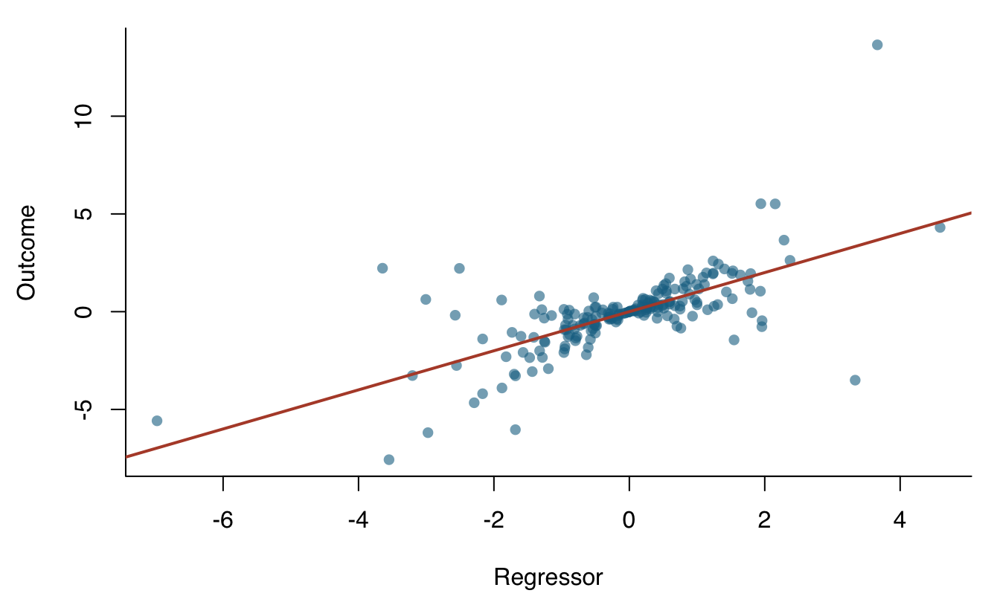
Figure 4.10: Situation of heteroskedasticity. The model is \(y_i = x_i + \varepsilon_i, \quad \varepsilon_i \sim \mathcal{N}(0,x_i^2)\), where the \(x_i\)’s are i.i.d. \(t(6)\).
We simulate 500 independent samples of the same model with \(n=200\). For each sample, we compute the OLS estimate of \(\beta\) (\(=1\)). For each of the 500 OLS estimations, we employ (a) the standard OLS variance formula (\(s^2 (\mathbf{X}'\mathbf{X})^{-1}\)) and (b) the White formula to estimate the variance of \(b\). We compare the average reported standard error with the empirical standard deviation of the 500 slope estimates.
Code
library(sandwich)
n <- 200 # sample size
N <- 500 # number of simulated samples
XX <- matrix(rt(n*N,df=6),n,N)
YY <- XX + XX*matrix(rnorm(n*N),n,N)
all_b <- NULL;all_V_OLS <- NULL
all_V_White_HC0 <- NULL;all_V_White_HC1 <- NULL
for(j in 1:N){
Y <- matrix(YY[,j],ncol=1)
X <- matrix(XX[,j],ncol=1)
eq <- lm(Y~X)
b <- eq$coefficients[2]
V_OLS <- vcov(eq)[2,2]
V_White_HC0 <- vcovHC(eq, type = "HC0")[2,2]
V_White_HC1 <- vcovHC(eq, type = "HC1")[2,2]
all_b <- c(all_b,b)
all_V_OLS <- c(all_V_OLS,V_OLS)
all_V_White_HC0 <- c(all_V_White_HC0,V_White_HC0)
all_V_White_HC1 <- c(all_V_White_HC1,V_White_HC1)
}
data_table(data.frame(Quantity=c("Empirical SD across samples","Mean conventional SE","Mean HC0 SE","Mean HC1 SE"),
Value=c(sd(all_b),mean(sqrt(all_V_OLS)),mean(sqrt(all_V_White_HC0)),
mean(sqrt(all_V_White_HC1)))),digits=3)| Quantity | Value |
|---|---|
| Empirical SD across samples | 0.151 |
| Mean conventional SE | 0.070 |
| Mean HC0 SE | 0.143 |
| Mean HC1 SE | 0.143 |
The White formula yields, on average, an estimated standard deviation much closer to the simulation benchmark than the conventional OLS formula, which underestimates the standard deviation of \(b\).
For the Paris rainfall regression in Example 4.5, the following table compares conventional standard errors with HC0 and HC1 adjustments. The coefficient remains unchanged. HC adjustments allow unequal variances but do not account for dependence between successive days; the HAC calculation in Example 4.15 addresses both.
Code
rain_v_hc0 <- sandwich::vcovHC(rain_simple,type="HC0")
rain_v_hc1 <- sandwich::vcovHC(rain_simple,type="HC1")
data_table(data.frame(Term=rain_terms,Estimate=coef(rain_simple),
Conventional_SE=sqrt(diag(vcov(rain_simple))),
HC0_SE=sqrt(diag(rain_v_hc0)),HC1_SE=sqrt(diag(rain_v_hc1))),
digits=3,row.names=FALSE,
col.names=c("Term","Estimate","Conventional SE","HC0 SE","HC1 SE"))| Term | Estimate | Conventional SE | HC0 SE | HC1 SE |
|---|---|---|---|---|
| Intercept | 17.292 | 0.129 | 0.130 | 0.130 |
| Rainfall (per 10 mm) | 0.743 | 0.279 | 0.322 | 0.322 |
Example 4.15 (Heteroskedasticity and Autocorrelation (HAC)) Newey and West (1987) have proposed a formula to address both heteroskedasticity and auto-correlation of the residuals (Eqs. (4.27) and (4.28)). They show that, if the correlation between terms \(i\) and \(j\) gets sufficiently small when \(|i-j|\) increases: \[\begin{eqnarray} &&\mbox{plim} \left( \frac{1}{n}\sum_{i=1}^{n}\sum_{j=1}^{n}\sigma_{i,j}\mathbf{x}_i\mathbf{x}'_j \right) \approx \\ &&\mbox{plim} \left( \frac{1}{n}\sum_{t=1}^{n}e_{t}^2\mathbf{x}_t\mathbf{x}'_t + \frac{1}{n}\sum_{\ell=1}^{L}\sum_{t=\ell+1}^{n}w_\ell e_{t}e_{t-\ell}(\mathbf{x}_t\mathbf{x}'_{t-\ell} + \mathbf{x}_{t-\ell}\mathbf{x}'_{t}) \right), \nonumber \tag{4.38} \end{eqnarray}\] where \(w_\ell = 1 - \ell/(L+1)\). A fixed \(L\) gives a truncated approximation. Consistency under general weak serial dependence requires \(L\) to increase suitably slowly with sample size; Chapter 8 develops the long-run-variance argument.
Let us illustrate the influence of autocorrelation using simulations. We consider the following model: \[\begin{equation} y_i = x_i + \varepsilon_i,\tag{4.39} \end{equation}\] where the \(x_i\)’s and the \(\varepsilon_i\)’s are such that: \[\begin{equation} x_i = 0.8 x_{i-1} + u_i \quad and \quad \varepsilon_i = 0.8 \varepsilon_{i-1} + v_i, \tag{4.40} \end{equation}\] where the \(u_i\)’s and the \(v_i\)’s are mutually independent i.i.d. \(\mathcal{N}(0,1)\) innovations. Thus both \(x_i\) and \(\varepsilon_i\) are serially correlated, but they are independent of one another; this simulation is designed to illustrate autocorrelation rather than heteroskedasticity.
We simulate 500 samples of the same model with \(n=200\). For each sample, we compute the OLS estimate of \(\beta\) (=1). For each of the 500 OLS estimations, we employ (a) the standard OLS variance formula (\(s^2 (\mathbf{X}'\mathbf{X})^{-1}\)), (b) the White formula, and (c) the Newey-West formula to estimate the variance of \(b\). For each formula, we compute the average of the 500 resulting standard deviations and compare these with the standard deviation of the 500 OLS estimate of \(\beta\).
Code
library(AEC);library(sandwich)
n <- 200 # sample length
nb.sim <- 500 # number of simulated samples
all.b <- NULL;all.OLS.stdv.b <- NULL
all.Whi.stdv.b <- NULL;all.NW.stdv.b <- NULL
for(replication in 1:nb.sim){
eps <- as.numeric(arima.sim(list(ar=.8),n=n))
x <- as.numeric(arima.sim(list(ar=.8),n=n))
y <- x + eps
eq <- lm(y~x)
all.b <- c(all.b,eq$coefficients[2])
all.OLS.stdv.b <- c(all.OLS.stdv.b,summary(eq)$coefficients[2,2])
White.V <- vcovHC(eq, type="HC1")
NWest.V <- NeweyWest(eq,lag=8,prewhite=FALSE,adjust=TRUE)
all.Whi.stdv.b <- c(all.Whi.stdv.b,sqrt(White.V[2,2]))
all.NW.stdv.b <- c(all.NW.stdv.b, sqrt(NWest.V[2,2]))
}
data_table(data.frame("Simulation SD"=sd(all.b),
"Mean OLS SE"=mean(all.OLS.stdv.b), "Mean HC1 SE"=mean(all.Whi.stdv.b),
"Mean HAC SE"=mean(all.NW.stdv.b), check.names=FALSE), digits=3)| Simulation SD | Mean OLS SE | Mean HC1 SE | Mean HAC SE |
|---|---|---|---|
| 0.149 | 0.072 | 0.071 | 0.121 |
The empirical SD measures how much the slope varies across independent samples. Compare each reported SE with that benchmark. HC1 permits unequal error variances but ignores serial dependence; the HAC calculation also uses eight lags. In a sample of 200 observations, a HAC estimate need not reproduce the benchmark exactly.
Return to the Paris rainfall regression in Example 4.5. For comparison, we also fit a specification with weekday, month and year indicators, allowing for systematic calendar differences in accident counts. Both specifications use the same consecutive days. We compare conventional, HC1 and Newey–West standard errors for the rainfall slope; the HAC calculation uses seven daily lags, Bartlett weights and no prewhitening.
Code
rain_models <- list("Rainfall only"=rain_simple,"Calendar controls"=rain_calendar)
rain_uncertainty <- do.call(rbind,lapply(names(rain_models),function(nm){
m <- rain_models[[nm]]
data.frame(Specification=nm,Estimate=coef(m)["rain_10mm"],
Conventional_SE=sqrt(vcov(m)["rain_10mm","rain_10mm"]),
HC1_SE=sqrt(sandwich::vcovHC(m,type="HC1")["rain_10mm","rain_10mm"]),
HAC_SE=sqrt(sandwich::NeweyWest(m,lag=7,prewhite=FALSE,adjust=TRUE)["rain_10mm","rain_10mm"]))
}))
data_table(rain_uncertainty,digits=3,row.names=FALSE,
col.names=c("Specification","Accidents per 10 mm","Conventional SE","HC1 SE","HAC SE"))| Specification | Accidents per 10 mm | Conventional SE | HC1 SE | HAC SE |
|---|---|---|---|---|
| Rainfall only | 0.743 | 0.279 | 0.322 | 0.350 |
| Calendar controls | 0.834 | 0.216 | 0.244 | 0.267 |
The fitted slopes do not depend on the covariance estimator. Choosing seven lags includes a week of serial covariances; it does not assert that all dependence beyond a week is zero. Longer lags provide a useful sensitivity check.
We can now complete the inference postponed in Example 4.5. The table uses HAC standard errors and a large-sample standard-normal reference distribution. Normality of the individual errors is not required, but suitable weak-dependence conditions are. The final columns give 95% intervals, \(b_k\pm1.96\,\widehat{\operatorname{se}}_{HAC}(b_k)\).
Code
rain_v_simple <- sandwich::NeweyWest(rain_simple,lag=7,prewhite=FALSE,adjust=TRUE)
rain_output <- unclass(lmtest::coeftest(rain_simple,vcov.=rain_v_simple,df=Inf))
rain_se <- sqrt(diag(rain_v_simple))
rain_ci <- cbind(coef(rain_simple)-qnorm(.975)*rain_se,
coef(rain_simple)+qnorm(.975)*rain_se)
rain_inference <- cbind(rain_output,rain_ci)
rownames(rain_inference) <- rain_terms
data_table(rain_inference,digits=3,row_label="Term",
col.names=c("Term","Estimate","HAC SE","z statistic","p-value","Lower 95%","Upper 95%"))| Term | Estimate | HAC SE | z statistic | p-value | Lower 95% | Upper 95% |
|---|---|---|---|---|---|---|
| Intercept | 17.292 | 0.196 | 88.394 | <0.001 | 16.909 | 17.676 |
| Rainfall (per 10 mm) | 0.743 | 0.350 | 2.122 | 0.0338 | 0.057 | 1.429 |
Example 4.16 (Returning to Swiss hydropower: uncertainty and sensitivity) The observations in Example 4.10 are successive days. Water conditions and electricity-market shocks can persist, so conventional independent-error standard errors are inappropriate. We keep the same model and use a Newey–West covariance estimate with seven daily lags, allowing a week of serial dependence.
Code
hydro_hac <- function(model) sandwich::NeweyWest(model,lag=7,prewhite=FALSE,adjust=TRUE)
hydro_first_se <- sqrt(diag(hydro_hac(hydro_first)))["wind_de_gw"]
hydro_wald <- (hydro_pi/hydro_first_se)^2
hydro_specs <- list(
"Baseline"=list(hydro,hydro_controls,"wind_de_gw"),
"Rain and hydrology controls"=list(hydro,paste(hydro_controls,
"+river_mw+nuclear_mw+rain_sio_mm+rain_gut_mm+rain_previous7_sio_mm+rain_previous7_gut_mm"),"wind_de_gw"),
"Offshore wind only"=list(hydro,hydro_controls,"offshore_gw"),
"Without 2022"=list(subset(hydro,format(date,"%Y")!="2022"),hydro_controls,"wind_de_gw"),
"2016-2020"=list(subset(hydro,date<as.Date("2021-01-01")),hydro_controls,"wind_de_gw"),
"2021-2024"=list(subset(hydro,date>=as.Date("2021-01-01")),hydro_controls,"wind_de_gw"))
hydro_checks <- do.call(rbind,lapply(names(hydro_specs),function(label) {
spec <- hydro_specs[[label]];d <- spec[[1]];controls <- spec[[2]];z <- spec[[3]]
model <- AER::ivreg(as.formula(paste("q_mw~price_10+",controls,"|",z,"+",controls)),data=d)
first <- lm(as.formula(paste("price_10~",z,"+",controls)),d)
data.frame(Specification=label,Days=nobs(model),
`Response (MW)`=unname(coef(model)["price_10"]),
`HAC SE (MW)`=unname(sqrt(diag(hydro_hac(model)))["price_10"]),
first_stage_wald=unname(coef(first)[z]^2/hydro_hac(first)[z,z]),check.names=FALSE)
}))
row.names(hydro_checks) <- NULL
data_table(hydro_checks[,1:4],digits=1)| Specification | Days | Response (MW) | HAC SE (MW) |
|---|---|---|---|
| Baseline | 3288 | 344.7 | 61.0 |
| Rain and hydrology controls | 3278 | 357.1 | 60.6 |
| Offshore wind only | 3288 | 383.0 | 74.1 |
| Without 2022 | 2923 | 469.6 | 53.3 |
| 2016-2020 | 1827 | 717.4 | 105.7 |
| 2021-2024 | 1461 | 264.4 | 55.0 |
All responses are in MW per 10 EUR/MWh. For the baseline, the approximate 95% interval is [225, 464] MW. The first-stage wind coefficient has a squared HAC \(t\)-statistic of 30.4, giving evidence of relevance after the controls; this is a one-restriction robust Wald statistic, not a homoskedastic first-stage \(F\)-statistic.
The additional hydrological controls are Swiss run-of-river and nuclear generation, current rainfall and preceding-seven-day rainfall. Ten incomplete river observations are omitted in that row only. Offshore wind provides a geographically more distant instrument; removing 2022 checks whether the energy crisis alone drives the estimate. The final rows estimate the same specification in two periods.
The positive sign survives these checks, but its magnitude changes considerably between periods. The baseline’s interval describes sampling uncertainty within the specified model; it does not cover uncertainty about exclusion or stability across regimes. In the row with incomplete river data, the seven HAC lags count successive observed days rather than exactly seven elapsed calendar days. The baseline is exactly identified, so an overidentification test is unavailable.
The preceding examples adjust inference for serial dependence. Residual diagnostics provide a complementary check on the covariance assumptions. The Durbin-Watson test, proposed by Durbin and Watson (1950) and Durbin and Watson (1951), uses the statistic \[ DW = \frac{\sum_{i=2}^{n}(e_i - e_{i-1})^2}{\sum_{i=1}^{n}e_i^2}= 2(1 - r) - \underbrace{\frac{e_1^2 + e_n^2}{\sum_{i=1}^{n}e_i^2}}_{\overset{p}{\rightarrow} 0}, \] where \(r\) is the lag-one sample residual autocorrelation, with the full residual sum of squares in its denominator: \[ r = \frac{\sum_{i=2}^{n}e_i e_{i-1}}{\sum_{i=1}^{n}e_i^2}. \] (\(r\) is a consistent estimator of \(\mathbb{C}or(\varepsilon_i,\varepsilon_{i-1})\), i.e. \(\rho\) in Eq. (4.30).)
The one-sided test for \(H_0\): \(\rho=0\) against \(H_1\): \(\rho>0\) is carried out by comparing \(DW\) to values \(d_L(T, K)\) and \(d_U(T, K)\): \[ \left\{ \begin{array}{ll} \mbox{If $DW < d_L$,}&\mbox{ the null hypothesis is rejected;}\\ \mbox{if $DW > d_U$,}&\mbox{ the hypothesis is not rejected;}\\ \mbox{If $d_L \le DW \le d_U$,} &\mbox{ no conclusion is drawn.} \end{array} \right. \]
Example 4.17 (Serial correlation in monthly accident counts) Figure 4.11 displays the same Zurich model and the autocorrelation of its residuals. The calendar-month indicators absorb regular seasonality; they do not guarantee that the remaining errors are uncorrelated over time.
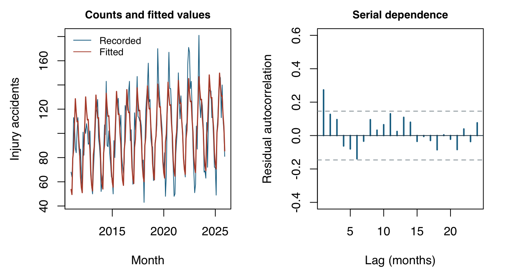
Figure 4.11: Monthly injury accidents in Zurich, 2011–2025. Left: recorded counts and fitted values from the trend-plus-month-indicators model. Right: residual autocorrelations; the zero-lag correlation is omitted. The dashed bounds are the usual approximate white-noise reference bounds.
Code
| DW | p.value |
|---|---|
| 1.4476 | <0.001 |
The one-sided test rejects zero residual autocorrelation in favour of positive autocorrelation. This supports revisiting the conventional covariance assumption; it does not by itself select a lag length for HAC estimation or establish that the mean specification is complete.
4.6.5 Cluster-robust covariance matrices
HAC estimators exploit an ordering of observations. In many cross-sectional and panel applications, dependence is instead organized by groups. Cluster-robust inference allows arbitrary dependence within a cluster while assuming independence across clusters. A cluster may gather entities from the same geographical area, industry, or cohort. This section follows J. G. MacKinnon, Nielsen, and Webb (2022); another useful reference is Cameron and Miller (2014).
The OLS estimator satisfies: \[\begin{equation} \mathbf{b} = \boldsymbol\beta + (\mathbf{X}'\mathbf{X})^{-1}\mathbf{X}'\boldsymbol\varepsilon.\tag{4.41} \end{equation}\] Consider a set \(\{n_1,n_2,\dots,n_G\}\) s.t. \(n=\sum_g n_g\), on which is based the following decomposition of \(\mathbf{X}\): \[ \mathbf{X} = \left[ \begin{array}{c} \mathbf{X}_1 \\ \mathbf{X}_2 \\ \vdots\\ \mathbf{X}_G \end{array} \right]. \] With these notations, Eq. (4.41) rewrites: \[\begin{equation} \mathbf{b} - \boldsymbol\beta = \left(\sum_{g=1}^G \mathbf{X}_g'\mathbf{X}_g\right)^{-1}\sum_{g=1}^G \mathbf{s}_g,\tag{4.42} \end{equation}\] where \[\begin{equation} \mathbf{s}_g = \mathbf{X}_g'\boldsymbol\varepsilon_g \tag{4.43} \end{equation}\] denotes the score vector (of dimension \(K \times 1\)) associated with the \(g^{th}\) cluster.
If the model is correctly specified then \(\mathbb{E}(\mathbf{s}_g)=0\) for all clusters \(g\). Note that Eq. (4.42) is valid for any partition of \(\{1,\dots,n\}\). Dividing the sample into clusters becomes meaningful if we further assume that the following hypothesis holds:
Hypothesis 4.6 (Clusters) We have: \[ (i)\; \mathbb{E}(\mathbf{s}_g\mathbf{s}_g')=\Sigma_g,\quad (ii)\; \mathbb{E}(\mathbf{s}_g\mathbf{s}_q')=0,\;g \ne q, \] where \(s_g\) is defined in Eq. (4.43).
The real assumption here is \((ii)\); the first one simply gives a notation for the covariance matrix of the score associated with the \(g^{th}\) cluster. Remark that these covariance matrices can differ across clusters. That is, cluster-based inference is robust against both heteroskedasticity and intra-cluster dependence without imposing any restrictions on the (unknown) form of either of them.
Naturally, matrix \(\Sigma_g\) depends on the covariance structure of the \(\varepsilon\)’s. In particular, if \(\Omega_g = \mathbb{E}(\boldsymbol\varepsilon_g\boldsymbol\varepsilon_g'|\mathbf{X}_g)\), then we have \(\Sigma_g = \mathbb{E}(\mathbf{X}_g'\Omega_g\mathbf{X}_g)\).
Under Hypothesis 4.6, it comes that the conditional covariance matrix of \(\mathbf{b}\) is: \[\begin{equation} \left(\mathbf{X}'\mathbf{X}\right)^{-1}\left(\sum_{g=1}^G \Sigma_g\right)\left(\mathbf{X}'\mathbf{X}\right)^{-1}\tag{4.44} \end{equation}\]
Let us denote by \(\varepsilon_{g,i}\) the error associated with the \(i^{th}\) component of vector \(\boldsymbol\varepsilon_g\). Consider the special case where \(\mathbb{E}(\varepsilon_{g,i} \varepsilon_{g,j}|\mathbf{X}_g)=\sigma^2\mathbb{I}_{\{i=j\}}\), then Eq. (4.44) gives the standard expression \(\sigma^2\left(\mathbf{X}'\mathbf{X}\right)^{-1}\) (see Eq. (4.8)).
If we have \(\mathbb{E}(\varepsilon_{gi} \varepsilon_{gj}|\mathbf{X}_g)=\sigma_{gi}^2\mathbb{I}_{\{i=j\}}\), then we fall in the case addressed by the White formula (see Example 4.14). That is, in this case, the conditional covariance matrix of \(\mathbf{b}\) is: \[ \left(\mathbf{X}'\mathbf{X}\right)^{-1}\left(\mathbf{X}'\left[ \begin{array}{cccc} \sigma_1^2 & 0 & \dots & 0 \\ 0 & \sigma_2^2 & & 0 \\ \vdots && \ddots& \vdots \\ 0 & \dots & 0 & \sigma_n^2 \end{array} \right]\mathbf{X}\right)\left(\mathbf{X}'\mathbf{X}\right)^{-1}. \] As in White (1980), the natural way to approach the conditional covariance given in Eq. (4.44) consists in replacing the \(\Sigma_g\) matrices by their sample equivalent, i.e. \(\widehat{\Sigma}_g=\mathbf{X}_g'\mathbf{e}_g\mathbf{e}_g'\mathbf{X}_g\). Adding corrections for the number of degrees of freedom, this leads to the following estimate of the covariance matrix of \(\mathbf{b}\): \[\begin{equation} \frac{G(n-1)}{(G-1)(n-K)}\left(\mathbf{X}'\mathbf{X}\right)^{-1}\left(\sum_{g=1}^G\widehat{\Sigma}_g\right) \left(\mathbf{X}'\mathbf{X}\right)^{-1}. \tag{4.45} \end{equation}\] The previous estimate is CRCV1 in J. G. MacKinnon, Nielsen, and Webb (2022). Note that we indeed find the White-MacKinnon estimator (Eq. (4.37)) when \(G=n\).
Remark that if there was only one cluster (\(G=1\)), and neglecting the degree-of-freedom correction, we would have: \[ \left(\mathbf{X}'\mathbf{X}\right)^{-1}\left(\mathbf{X}'\mathbf{e}\mathbf{e}'\mathbf{X}\right) \left(\mathbf{X}'\mathbf{X}\right)^{-1} = 0 \] because \(\mathbf{X}'\mathbf{e}=0\). Hence, having large clusters does not necessarily increase variance.
Often, when working with panel data (see Chapter 5), we want to cluster in different dimensions. A typical case is when the data are indexed by both individuals (\(i\)) and time (\(t\)). In that case, we may indeed suspect that: (a) the residuals are correlated across clusters of dates (e.g., with monthly data, a cluster may be one year) and (b) the residuals are correlated across clusters of individuals (e.g., with data at the county level a cluster may be a state). In this case, one can employ two-way clustering.
Formally, consider two distinct partitions of the data: one through index \(g\), with \(g \in \{1,\dots,G\}\), and the other through index \(h\), with \(h \in \{1,\dots,H\}\). Accordingly, we denote by \(\mathbf{X}_{g,h}\) the submatrix of \(\mathbf{X}\) that contains the explanatory variables corresponding to clusters \(g\) and \(h\) (e.g., the firms of a given country \(g\) at a given date \(h\)). We also denote by \(\mathbf{X}_{g,\bullet}\) (respectively \(\mathbf{X}_{\bullet,h}\)) the submatrix of \(\mathbf{X}\) containing all explanatory variables pertaining to cluster \(g\), for all possible values of \(h\) (resp. to cluster \(h\), for all possible values of \(g\)).
We will make the following assumption:
Hypothesis 4.7 (Two-way clusters) We have: \[\begin{eqnarray*} &&\mathbb{E}(\mathbf{s}_{g,\bullet}\mathbf{s}_{g,\bullet}')=\Sigma_g,\quad \mathbb{E}(\mathbf{s}_{\bullet,h}\mathbf{s}_{\bullet,h}')=\Sigma^*_h,\quad \mathbb{E}(\mathbf{s}_{g,h}\mathbf{s}_{g,h}')=\Sigma_{g,h},\\ &&\mathbb{E}(\mathbf{s}_{g,h}\mathbf{s}_{q,k}')=0\;\mbox{if }g\neq q\mbox{ and }h \ne k. \end{eqnarray*}\]
Proposition 4.16 (Covariance of scores in the two-way-cluster setup) Under this assumption, the matrix of covariance of the scores is given by: \[ \Sigma = \sum_{g=1}^G \Sigma_{g} + \sum_{h=1}^H \Sigma^*_{h} - \sum_{g=1}^G\sum_{h=1}^H \Sigma_{g,h}. \] (The last term on the right-hand side must be subtracted in order to avoid double counting.)
Proof. Scores have mean zero under exogeneity. In the covariance of \(\sum_{g,h}\mathbf{s}_{g,h}\), pairs of cells sharing neither cluster have zero cross-covariance. Summing the remaining pairs gives \[ \Sigma=\sum_g\mathbb E(\mathbf{s}_{g,\bullet}\mathbf{s}_{g,\bullet}')+ \sum_h\mathbb E(\mathbf{s}_{\bullet,h}\mathbf{s}_{\bullet,h}')- \sum_{g,h}\mathbb E(\mathbf{s}_{g,h}\mathbf{s}_{g,h}'). \] The subtraction removes cell contributions counted in both cluster dimensions, yielding the stated formula.
The asymptotic theory can be based on two different approaches: (i) large number of clusters (common case), and (ii) fixed number of clusters but large number of observations in each cluster (see Subsections 4.1 and 4.2 in J. G. MacKinnon, Nielsen, and Webb (2022)). The more variable the \(N_g\)’s (clusters’ sizes are heterogeneous in terms of size), the less reliable asymptotic inference based on Eq. (4.45), especially when a very few clusters are unusually large, or when the distribution of the data is heavy-tailed. These issues are somehow mitigated when the clusters have an approximate factor structure.
In practice, \(\Sigma\) is estimated by: \[ \widehat{\Sigma} = \sum_{g=1}^G \widehat{\mathbf{s}}_{g,\bullet}\widehat{\mathbf{s}}_{g,\bullet}' + \sum_{h=1}^H \widehat{\mathbf{s}}_{\bullet,h}\widehat{\mathbf{s}}_{\bullet,h}' - \sum_{g=1}^G\sum_{h=1}^H \widehat{\mathbf{s}}_{g,h}\widehat{\mathbf{s}}_{g,h}', \] and we use: \[ \widehat{\mathbb{V}ar}(\mathbf{b}) = \left(\mathbf{X}'\mathbf{X}\right)^{-1}\widehat{\Sigma}\left(\mathbf{X}'\mathbf{X}\right)^{-1}. \]
As an alternative to an asymptotic approximation, one can use the bootstrap methods discussed in Section 5 of J. G. MacKinnon, Nielsen, and Webb (2022). In R, the package fwildclusterboot implements such procedures.6
Example 4.18 (Turnout and two-way clustering) Swissvotes (Appendix 10.3) provides a setting with two clustering dimensions. One row is one federal voting object in one canton. Several objects may share a voting day, and every canton appears repeatedly. We relate turnout (in percent of eligible voters) to the number of proposals on the day, with canton indicators, procedure indicators and a linear time trend.
Objects submitted on the same day can share turnout shocks; observations in the same canton can share persistent local influences. Canton indicators allow different mean turnout levels but do not eliminate dependence within cantons. The proposal count varies by voting day, not independently across all rows. Its source definition groups an initiative with its counterproposal and tie-break question as one proposal.
Code
votes_v_hc <- sandwich::vcovHC(votes_model,type="HC1")
votes_v_day <- sandwich::vcovCL(votes_model,cluster=votes_reg$date,type="HC1")
votes_v_two <- sandwich::vcovCL(votes_model,
cluster=votes_reg[,c("canton","date")],type="HC1")
votes_target <- "objects_on_day"
data_table(data.frame(Covariance=c("Conventional","HC1","Voting-day clusters","Canton and day clusters"),
Estimate=rep(coef(votes_model)[votes_target],4),
SE=sqrt(c(vcov(votes_model)[votes_target,votes_target],
votes_v_hc[votes_target,votes_target],votes_v_day[votes_target,votes_target],
votes_v_two[votes_target,votes_target]))),digits=3,row.names=FALSE,
col.names=c("Covariance estimator","Proposal-count coefficient","SE"))| Covariance estimator | Proposal-count coefficient | SE |
|---|---|---|
| Conventional | 0.476 | 0.053 |
| HC1 | 0.476 | 0.051 |
| Voting-day clusters | 0.476 | 0.322 |
| Canton and day clusters | 0.476 | 0.318 |
All four rows use the same 11807 observations and the same coefficient: only the dependence assumption changes. There are 158 voting-day clusters and 26 cantons. The two-way calculation allows dependence among observations sharing either dimension. The limited number of cantons makes the cluster-count qualifications above relevant. The lesson is that changing the dependence assumption changes uncertainty, not the fitted relationship or its causal interpretation.
4.7 Shrinkage methods
The chapter has so far treated the set of regressors as given. When many covariates are potentially relevant, selecting a specification becomes part of the estimation problem. Keeping all variables can make estimates imprecise (Section 4.3.3); shrinkage methods trade some bias for lower variance and, in the lasso case, variable selection. The two best-known approaches are ridge regression and the lasso.7 Both modify the OLS minimization problem (Section 4.2): \[\begin{equation} \mathbf{b} = \underset{\boldsymbol\beta}{\mbox{argmin}}\; \sum_{i=1}^n(y_i - \mathbf{x}_i'\boldsymbol\beta)^2 \end{equation}\] is replaced with the following: \[\begin{equation} \mathbf{b}_\lambda = \underset{\boldsymbol\beta}{\mbox{argmin}}\; \sum_{i=1}^n(y_i - \mathbf{x}_i'\boldsymbol\beta)^2 + \lambda f(\boldsymbol\beta),\tag{4.46} \end{equation}\] where \(\lambda f(\boldsymbol\beta)\) is a penalty term that positively depends on the “size” of the components of \(\boldsymbol\beta\). This term is called the shrinkage penalty term.
Specifically, assuming that the vector \(\mathbf{x}_i\) of potential covariates is of dimension \(K \times 1\), we have: \[\begin{eqnarray*} f(\boldsymbol\beta) & = & \sum_{j=1}^K \beta_j^2 \quad \mbox{in the ridge case ($\ell_2$ norm)},\\ f(\boldsymbol\beta) & = & \sum_{j=1}^K |\beta_j| \quad \mbox{in the lasso case ($\ell_1$ norm)}. \end{eqnarray*}\]
In most cases, we do not want to involve the intercept in the set of parameters to shrink, and the preceding equations are respectively replaced with: \[\begin{eqnarray*} f(\boldsymbol\beta) & = & \sum_{j=2}^K \beta_j^2 \quad \mbox{(ridge)},\\ f(\boldsymbol\beta) & = & \sum_{j=2}^K |\beta_j| \quad \mbox{(lasso)}. \end{eqnarray*}\]
The \(\ell_1\) and \(\ell_2\) penalties affect estimates differently as the tuning parameter \(\lambda\) grows. Ridge coefficients move continuously towards zero. Under the lasso penalty, some coefficients become exactly zero. Ridge therefore performs shrinkage, whereas the lasso performs both shrinkage and variable selection.
Parameter \(\lambda\) has to be determined separately from the minimization problem of Eq. (4.46). One can combine standard criteria (e.g., BIC or Akaike) for this purpose.
Example 4.19 (Predicting credit defaults with many regressors) Can a flexible regression help predict which clients carry the next-month default indicator? We return to AEC::UCIcredit (Appendix 10.4), with one row per client and a binary outcome: one for a recorded default and zero otherwise. All predictors come from the client characteristics and April–September histories observed before that outcome.
We use age, the credit limit, six statement balances and six payment amounts, together with indicators for sex, education, marital status and the six repayment-status variables. Monetary predictors are transformed to reduce their skewness, preserving negative statement balances. Starting from these 14 numeric predictors, we compare three systematic specifications: a quadratic expansion, that expansion augmented with interactions with commonly observed repayment-status categories, and all numeric polynomial terms up to degree three. The cubic terms include cubes, squared-by-linear products and products of three different predictors. They allow curvature and interactions, rather than adding new information about the clients.
Here ridge and lasso minimise the squared-error criterion introduced above, even though the outcome is binary. They produce linear default scores. Chapter 7 introduces logit and probit models that constrain fitted probabilities to lie between zero and one.
We use 21,000 training clients and 9,000 evaluation clients. Five-fold cross-validation uses only the training clients, with identical folds for all methods. The following training-only comparison records all three specifications considered; a lower mean squared error is better.
Code
| Specification | Predictors | OLS CV MSE | Ridge CV MSE | Lasso CV MSE |
|---|---|---|---|---|
| Quadratic | 186 | 0.1370 | 0.1356 | 0.1354 |
| Quadratic + status interactions | 480 | 0.1395 | 0.1360 | 0.1354 |
| Cubic | 746 | 0.1467 | 0.1359 | 0.1352 |
The cubic specification has the lowest lasso validation error, but its advantage over the quadratic specification is small. Its main lesson is the cost of fitting a rich model without regularisation: cubic OLS has substantially higher validation error. We use the 746-predictor cubic design for the common OLS/ridge/lasso comparison and retain the smaller quadratic OLS model as a benchmark. Thus we do not judge shrinkage solely against an unnecessarily flexible competitor.
Constant or exactly redundant columns are removed using training predictors only. Standardisation is fitted within each training fold. Neither the richer specification nor its penalties is chosen using the 9,000 evaluation outcomes.
Figure 4.12 shows how increasing the penalty shrinks coefficients. For lasso, some coefficients become exactly zero.
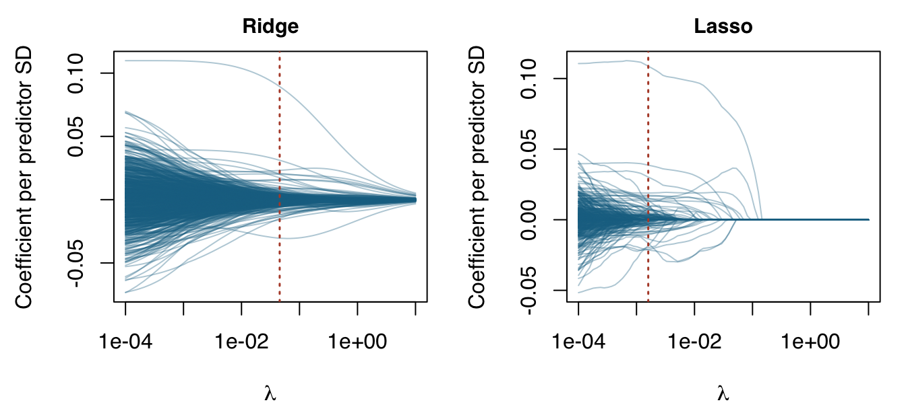
Figure 4.12: Coefficient paths for credit-default prediction. Coefficients are expressed per training-sample standard deviation of each predictor for display. Dotted vertical lines mark the minimum-error cross-validation choices. The unpenalised intercept is omitted.
We choose the penalty separately for ridge and lasso by minimising the mean validation squared error in Figure 4.13. The error bars show one estimated standard error across the validation folds. A larger penalty can reduce estimation noise, but excessive shrinkage loses useful predictive information.
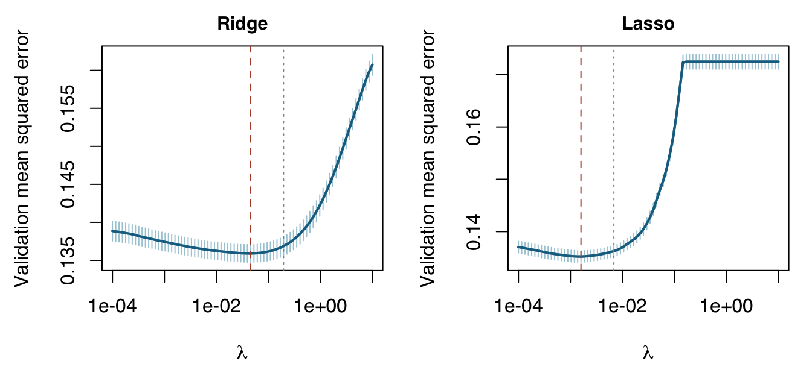
Figure 4.13: Five-fold cross-validation on the 21,000 training clients. Orange dashed lines mark the minimum-error penalties; grey dotted lines mark the largest penalties within one estimated standard error of the minimum. The 9,000 held-out clients do not enter these curves.
Finally, we evaluate the selected models on the reserved clients. Cubic OLS, ridge and lasso use the same predictors. The table also retains the default-share benchmark and the smaller quadratic OLS specification. The primary comparison uses the original squared-error criterion; the next column reports a common diagnostic that clips each score to \([0,1]\) before evaluation.
Code
| Method | Held-out MSE | MSE after clipping | Nonzero slopes |
|---|---|---|---|
| Training default share | 0.1718 | 0.1718 | 0 |
| Quadratic OLS | 0.1358 | 0.1356 | 186 |
| Cubic OLS | 0.1418 | 0.1379 | 746 |
| Cubic ridge | 0.1361 | 0.1359 | 746 |
| Cubic lasso | 0.1359 | 0.1358 | 98 |
Lasso retains 98 of the 746 cubic-design slopes. Its primary held-out mean squared error is 4.2% lower than cubic OLS. The improvement is smaller after clipping, because part of the gain comes from avoiding extreme linear scores: with clipping the reduction is 1.5%. No penalties or features are retuned on these evaluation results.
The smaller quadratic OLS model remains competitive and slightly outperforms the penalised cubic models on these clients. The conclusion is therefore specific: shrinkage protects against the cost of fitting a rich specification; it does not establish that greater complexity improves prediction. The score comparison concerns other clients from the same collection, rather than outcomes in future calendar months. Chapter 7 returns to the data with models designed for binary probabilities.
4.8 Chapter recap
- Section 4.1 states the assumptions that determine the finite- and large-sample properties of regression estimators.
- Section 4.2 derives OLS, and Theorem 4.1 identifies its efficiency among linear unbiased estimators under the Gauss-Markov assumptions.
- Proposition 4.10 shows how jointly imposed linear restrictions can be tested by comparing restricted and unrestricted fit.
- Section 4.3 separates multicollinearity, omitted-variable bias, and the loss of precision caused by irrelevant regressors.
- Section 4.4 distinguishes uncertainty about the conditional mean from the additional dispersion of a new outcome.
- Definition 4.2 states the relevance and exogeneity requirements for instrumental variables.
- Definition 4.3 allows heteroskedastic and correlated disturbances; Sections 4.6.4 and 4.6.5 develop corresponding covariance estimators.
- Section 4.7 explains how ridge and lasso estimation trade fit against coefficient magnitude when many covariates are available.
4.9 Exercises
Attempt each question and explain your reasoning, including for true-or-false statements. Foundation exercises apply a result directly; Standard exercises require several steps or a short proof; Advanced exercises combine several results or require a longer derivation. Worked solutions and exercise-specific hints are reserved for teaching sessions and are not included in this student edition.
Exercise 4.1 (OLS inference in a three-regressor model) Standard | Analytical
Review Section 4.2.
Consider the following linear regression: \[y_i = \beta_1 x_{i,1} + \beta_2 x_{i,2} + \beta_3 x_{i,3} + \varepsilon_i,\] where \(x_{i,1} = 1\) for all \(i\). We observe \((y_i, x_{i,2}, x_{i,3})\), for \(i \in \{1, \dots, n\}\), with \(n = 200\).
In matrix notation, the linear regression writes: \[\mathbf{y} = \boldsymbol{X}\boldsymbol{\beta} + \boldsymbol{\varepsilon}.\] The OLS estimator of \(\boldsymbol{\beta} = [\beta_1, \beta_2, \beta_3]'\) is denoted by \(\mathbf{b}\).
We suppose that the standard full-rank, conditional-mean-zero, homoskedasticity, and no-cross-correlation assumptions hold. We additionally assume normally distributed errors.
The OLS estimates of the disturbances \(\varepsilon_i\) are denoted by \(e_i\). Show that \(\bar{e}_n = 0\).
Show that if \(\mathbb{E}(\boldsymbol{\varepsilon} | \boldsymbol{X}) = 0\), the OLS estimator of \(\boldsymbol{\beta}\) is unbiased.
The correlation between \(x_{i,2}\) and \(x_{i,3}\) is 0.98. What does it imply for the \(\mathbf{b}\) estimator? (No computation is required here, just a brief explanation.)
In the following, we assume that \(\beta_3 = 0\) and that the Gauss–Markov assumptions are satisfied. In the formulas below, \(\boldsymbol{X}\) denotes the \(n\times2\) design matrix of the reduced model \(y_i = \beta_1 + \beta_2 x_{i,2} + \varepsilon_i\). Its OLS estimation gives \(b_2 = 1.2\), a residual sum of squares of 181, and \[(\boldsymbol{X}'\boldsymbol{X})^{-1} = \begin{bmatrix} 1.1 & 0.4 \\ 0.4 & 0.25 \end{bmatrix}.\]Give an estimate of \(\mathbb{V}ar(b_2|\boldsymbol{X})\).
Compute an approximate 95% confidence interval for \(\beta_2\). You will also briefly explain why you can compute such an interval in the present case.
Exercise 4.2 (The fitted hyperplane and sample averages) Standard | Proof
Review Section 4.2.
Consider the linear model: \[y_i = \beta_1 x_{i,1} + \beta_2 x_{i,2} + \cdots + \beta_K x_{i,K} + \varepsilon_i = \mathbf{x}_i'\boldsymbol{\beta} + \varepsilon_i, \quad i = 1, \dots, n.\] We assume that Assumptions 4.1 (full rank), 4.2 (conditional mean zero), 4.3 (homoskedasticity), 4.4 (non-correlated residuals) of the course hold. We further assume that \(x_{i,1} = 1\) for all \(i\).
Show that the hyperplane of the regression passes through the average of the data, i.e., \[\bar{y} = \bar{\mathbf{x}}'\mathbf{b},\] where \[\bar{y} = \frac{1}{n} \sum_{i=1}^n y_i, \quad \bar{\mathbf{x}} = \frac{1}{n} \sum_{i=1}^n \mathbf{x}_i,\] and where \(\mathbf{b}\) is the OLS estimator of \(\boldsymbol{\beta} = [\beta_1, \dots, \beta_K]'\).
Show that the mean of the fitted values (\(= \mathbf{X}\mathbf{b}\)) is equal to the mean of the actual values, i.e., \[\bar{y} = \frac{1}{n} \sum_{i=1}^n \hat{y}_i,\] where \(\hat{y}_i = \mathbf{b}'\mathbf{x}_i\).
The \(R^2\) coefficient is defined by \[R^2 = \frac{\sum_{i=1}^n (\hat{y}_i - \bar{y})^2}{\sum_{i=1}^n (y_i - \bar{y})^2}.\] Show that \(\sum_{i=1}^n (y_i - \bar{y})^2 = \sum_{i=1}^n (y_i - \hat{y}_i)^2 + \sum_{i=1}^n (\hat{y}_i - \bar{y})^2\), and deduce that \(R^2\) is between 0 and 1.
Exercise 4.3 (Unbiased estimation of the error variance) Advanced | Proof
Review Section 4.2.
Consider the linear model: \[y_i = \beta_1 x_{i,1} + \beta_2 x_{i,2} + \cdots + \beta_K x_{i,K} + \varepsilon_i = \mathbf{x}_i'\boldsymbol{\beta} + \varepsilon_i, \quad i = 1, \dots, n.\] We assume that Assumptions 4.1 (full rank), 4.2 (conditional mean zero), 4.3 (homoskedasticity), and 4.4 (non-correlated residuals) hold.
Let \(\mathbf{b}\) be the estimator of \(\boldsymbol{\beta}\) and let \(s^2\) be the OLS estimator of \(\sigma^2\). The estimator \(s^2\) is defined by: \[s^2 = \frac{\mathbf{e}'\mathbf{e}}{n - K}, \quad \text{where } \mathbf{e} = \mathbf{y} - \mathbf{X}\mathbf{b}.\]
Write the model above in matrix form: \[\mathbf{y} = \mathbf{X}\boldsymbol{\beta} + \boldsymbol{\varepsilon},\] clarifying how \(\mathbf{y}\), \(\mathbf{X}\), \(\boldsymbol{\beta}\), and \(\boldsymbol{\varepsilon}\) are defined and their dimensions.
Show that the estimated residuals are orthogonal to the explanatory variables.
Show that if the model contains an intercept, the estimated residuals have mean zero.
Show that if the columns of \(\mathbf{X}\) are orthogonal, the estimator of \(\beta_j\) in the model above coincides with that of \(\beta_j\) in \(y_i = \beta_j x_{i,j} + u_i, \quad i = 1, \dots, n\).
Show that \(s^2\) is conditionally unbiased for \(\sigma^2\).
Exercise 4.4 (OLS assumptions, confidence intervals, and tests) Standard | Analytical
Review Section 4.2.
Verbeek (2004), exercise 2.1 (slightly modified)
Consider the linear model \[y_i = \beta_1 + \beta_2 x_{i,2} + \beta_3 x_{i,3} + \varepsilon_i = \mathbf{x}_i' \boldsymbol{\beta} + \varepsilon_i, \quad i = 1, \dots, n,\]
Let \(\mathbf{b}\) be the estimator of \(\boldsymbol{\beta} = [\beta_1, \beta_2, \beta_3]'\) and let \(s^2\) be the OLS estimator of \(\sigma^2\). Assume that \(n\) is large.
Express \(\mathbf{b}\).
Which assumptions are needed to make \(\mathbf{b}\) an unbiased estimator for \(\boldsymbol{\beta}\)?
Explain how a confidence interval for \(\beta_2\) can be constructed. Which additional assumptions are needed?
Explain how one can test the hypothesis that \(\beta_3 = 1\).
Explain how one can test the joint hypothesis that \(\beta_2 + \beta_3 = 0\) and \(\beta_1 = 2\).
Explain how one can test the hypothesis that \(\beta_2 = \beta_3 = 0\).
Suppose that \(\lim_{n \to \infty} \frac{1}{n} \mathbf{X}'\mathbf{X} = \mathbf{Q}\) and that all \((y_i, x_{i,2}, x_{i,3})\) are independent across \(i\). Which assumptions are needed to make \(\mathbf{b}\) a consistent estimator for \(\boldsymbol{\beta}\)?
Suppose that \(x_{i,2} = 2 + 3x_{i,3}\). What will happen if you try to estimate the linear model above?
Suppose that the model is estimated with \(x_{i,2}^* = 2x_{i,2} - 2\) included rather than \(x_{i,2}\). How are the coefficients in this model related to those in the original model above? And the \(R^2\)s?
Exercise 4.5 (Gauss-Markov results: true or false?) Standard | True or false
Review Section 4.3.
Verbeek (2004), exercise 2.4 (slightly modified)
Carefully read the following statements. Are they True or False? Explain.
Under Gauss-Markov conditions, OLS can be shown to be BLUE. The phrase linear in this acronym refers to the fact that we are estimating a linear model.
The Gauss–Markov conditions alone are sufficient for the usual exact t-test in small samples.
A regression of the OLS residual upon the regressors included in the model by construction yields an \(R^2\) of zero. (We suppose the regression includes a constant.)
The hypothesis that the OLS estimator is equal to zero can be tested by means of a t-test.
If the absolute t-value of a coefficient is smaller than 1.96, we reject the null hypothesis that the coefficient is zero, with 95% confidence.
Because OLS provides the best linear approximation of a variable \(y\) from a set of regressors, OLS also gives the best linear unbiased estimators for the coefficients of the regressors.
If a variable in a model is significant at the 10% level, it is also significant at the 5% level.
Exercise 4.6 (OLS matrices and residuals: true or false?) Standard | True or false
Review Section 4.2.
We assume that the Gauss–Markov assumptions (4.1 to 4.4 from the course) are satisfied in the model \[y_i=\mathbf{x}_i'\boldsymbol\beta+\varepsilon_i, \qquad \mathbb{V}ar(\varepsilon_i|\mathbf{X})=\sigma^2.\] The model includes a constant (the first component \(x_{i,1}=1\) for all \(i\)). The dimension of \(\mathbf{x}_i\) is \(K\times 1\), with \(K>1\).
Consider the OLS regression of \(y_i\) on \(\mathbf{x}_i\). Let \(\mathbf{b}\) denote the OLS estimator of \(\boldsymbol\beta\) and let \(\mathbf{e}\) denote the residual vector, \(\mathbf{e}=\mathbf{y}-\mathbf{X}\mathbf{b}\), where \(\mathbf{X}\) is the \(n\times K\) matrix whose \(i\)th row is \(\mathbf{x}_i'\), and \(\mathbf{y}=[y_1,\dots,y_n]'\).
We assume that \(n\) is large, that \(\{\mathbf{x}_i,\varepsilon_i\}\) are i.i.d. across individuals \(i\), and that \(\mathbf{X}'\mathbf{X}/n\) converges to an invertible matrix \(Q\).
We set \(s^2=\mathbf{e}'\mathbf{e}/(n-K)\) and denote by \(v_k\) the \(k\)th diagonal element of \((\mathbf{X}'\mathbf{X})^{-1}\).
For each statement, decide whether it is true or false and justify your answer.
\(s^2=\sigma^2\).
The sum of the OLS residuals \(e_i\) is equal to zero.
The distribution of the OLS estimator is approximately Gaussian only if the errors \(\varepsilon_i\) are Gaussian.
For \(k=1,\dots,K\), the distribution of \(b_k-\beta_k\) is approximately \(\mathcal{N}(0,s^2 v_k)\).
The coefficient of determination (\(R^2\)) is strictly larger than 0.
Exercise 4.7 (Endogeneity and instruments: true or false?) Advanced | True or false
Review Section 4.5.
Consider four random variables \(v_i\), \(w_i\), \(z_i\), and \(\varepsilon_i\). Each of them is Gaussian with mean zero.
An additional random variable \(y_i\) is defined by \[y_i=\beta_1 v_i+\beta_2 w_i+\varepsilon_i.\]
The error term \(\varepsilon_i\) is uncorrelated with \(v_i\) and \(z_i\), but it is correlated with \(w_i\). Moreover, \(w_i\) is correlated with \(z_i\) but not with \(v_i\). This implies in particular that \(\mathbb{E}(\varepsilon_i|v_i)=0\), \(\mathbb{E}(\varepsilon_i|v_i,w_i)\neq 0\), \(\mathbb{E}(\varepsilon_i|w_i)\neq 0\), \(\mathbb{E}(\varepsilon_i|v_i,z_i)=0\), \(\mathbb{E}(w_i|v_i)=0\), and \(\mathbb{E}(v_i|w_i)=0\).
None of the four random variables can be obtained as an exact linear combination of the other three. Finally, the variables \((v_i,w_i,z_i,\varepsilon_i)\) are independent across entities \(i\).
We denote by \(\hat{w}_i\) the fitted value of \(w_i\) in the first-stage OLS regression of \(w_i\) on both exogenous variables, \(v_i\) and \(z_i\).
For each statement, decide whether it is true or false and justify your answer.
In the OLS regression of \(y_i\) on \((v_i,w_i)\), the OLS estimator of \(\boldsymbol\beta=(\beta_1,\beta_2)'\) is unbiased.
\(z_i\) is a valid instrument for \(w_i\).
In the OLS regression of \(y_i\) on \(v_i\) (alone), the OLS estimator of \(\beta_1\) is unbiased.
In the OLS regression of \(y_i\) on \(w_i\) (alone), the OLS estimator of \(\beta_2\) is unbiased.
Regressing \(y_i\) on \((v_i,\hat{w}_i)\) by OLS provides a consistent estimate of \((\beta_1,\beta_2)'\).
Exercise 4.8 (Measurement error in income) Advanced | Application
Review Section 4.3.
We denote by \(c_i\) the logarithm of consumption by household \(i\) and by \(y_i^*\) the permanent income of the same household.
Consider the consumption function \[c_i = \beta y_i^* + \varepsilon_i, \quad \varepsilon_i \sim \mathcal{N}(0, \sigma^2),\] where \(\mathbb{E}(\varepsilon_i | y_i^*) = 0.\)
Permanent income \(y_i^*\) is not observed but we have data on \(y_i\), the current income of household \(i\). Assume that \(y_i = y_i^* + v_i\), where \(v_i \sim \mathcal{N}(0, w^2)\), \(\mathbb{E}(v_i | y_i^*) = 0\) and \(\mathbb{E}(v_i | \varepsilon_i) = 0\).
We have a sample of size \(n\) and use the notation: \(\mathbf{y} = [y_1, \dots, y_n]' \quad \text{and} \quad \mathbf{u} = [u_1, \dots, u_n]'\). We assume further that the \((y_i^*, \varepsilon_i, v_i)\) are independent (across \(i\)).
Now consider the linear regression of \(c_i\) on \(y_i\): \(c_i = \beta y_i + u_i\). The residuals of this regression are denoted by \(u_i\).
Show that \(u_i = \varepsilon_i - \beta v_i\).
Compute the covariance between \(y_i\) and \(u_i\).
We denote by \(\mathbf{b}\) the OLS estimator of \(\beta\) in the regression of \(c_i\) on \(y_i\) (with no constant term). After expressing \(\mathbf{b}\) as a function of \(\beta\), \(\mathbf{y}\) and \(\mathbf{u}\), give the limit of \(\mathbf{b}\) when \(n \to \infty\) (the formula involves, in particular, \(\mathbb{E}(y_i)\) and \(\mathbb{V}ar(y_i)\)).
Exercise 4.9 (Consumer sentiment and stock returns) Advanced | Application
Review Section 4.3.
We want to study the influence of consumer sentiment on stock returns (\(y_i\)). Some institutions construct (aggregated) consumer sentiment indices. These indices are usually based on surveys. We denote by \(\Delta s_i\) the change in the value of such an index between date \(i - 1\) and date \(i\).
We have a sample of \(n\) dates and we assume that the observations \((y_i, \Delta s_i)\) are independent across time (in other words they are "serially independent").
Consider the model: \[ y_i = \beta \Delta s_i + \varepsilon_i,\] with \(\mathbb{E}(\varepsilon_i) = 0\).
We also assume that: \[\varepsilon_i = \eta_i + \nu_i\] \[\Delta s_i = \delta \eta_i + \zeta_i\] where \(\eta_i\), \(\nu_i\) and \(\zeta_i\) are zero-mean variables that are mutually and serially independent and with respective variances \(\sigma_\eta^2\), \(\sigma_\nu^2\) and \(\sigma_\zeta^2\).
Provide potential interpretations of \(\eta_i\) and compute \(\mathbb{E}(\varepsilon_i \Delta s_i)\).
What can be said about the OLS estimate of \(\beta\) (the model above)?
Let \(z_i\) be the value of a weather index at date \(i\). Interpret the condition \(\mathbb{E}(\varepsilon_i\mid z_i)=0\). What additional condition must \(z_i\) satisfy to be a valid instrument? Assuming validity, name the method that can be used to estimate \(\beta\).
Let \(\mathbf Z\) be the \(n\)-dimensional vector with \(i\)th element \(z_i\). Regress \(\Delta s_i\) on \(z_i\) by OLS and express the fitted vector \(\widehat{\Delta\mathbf s}\) as a function of \(\mathbf Z\).
Show that the OLS regression of \(y_i\) on the fitted values \(\widehat{\Delta s_i}\) provides a consistent estimate of \(\beta\).
Exercise 4.10 (A regression with MA(1) errors) Advanced | Analytical
Review Section 4.
Consider the model:
\[y_i = \beta_1 x_{i,1} + \cdots + \beta_K x_{i,K} + \varepsilon_i,\]
where \(\varepsilon_i = u_i + \delta u_{i-1}\).
There is no collinear relationship among the explanatory variables \(x_{i,k}\). The \(u_i\) are i.i.d. \(\mathcal{N}(0, \sigma^2)\). These disturbances \(u_i\) are independent from the \(\mathbf{x}_j = [x_{j,1},\dots,x_{j,K}]'\).
We denote by \(\mathbf{X}\) the matrix whose \((i,k)\) entry is \(x_{i,k}\) and by \(\boldsymbol{\varepsilon}\) the vector \([\varepsilon_1,\dots,\varepsilon_n]'\). The sample size is denoted by \(n\).
Compute \(\mathbb{E}(\boldsymbol{\varepsilon})\) and \(\mathbb{C}ov(\varepsilon_i, \varepsilon_j)\). Consider three cases: (1) \(i = j\), (2) \(i = j+1\) (or \(i = j-1\)), and (3) \(i > j+1\) (or \(i < j-1\)). Express \(\mathbf{\Sigma} = \mathbb{C}ov(\boldsymbol{\varepsilon})\) as a function of \(\sigma^2\) and \(\delta\).
Compute \(\mathbb{V}ar(\mathbf{b} | \mathbf{X})\) where \(\mathbf{b}\) is the OLS estimate of \(\boldsymbol{\beta} = [\beta_1, \dots, \beta_K]'\).
If we knew \(\mathbf{\Sigma}\), what would be the best linear unbiased estimator of \(\boldsymbol\beta\)?
Assuming that \(\mathbf{X'X}/n\) and \(\mathbf{X'\Sigma X}/n\) converge to positive definite matrices (when \(n\) goes to infinity), explain how to obtain a consistent estimate of \(\boldsymbol{\beta}\).
Exercise 4.11 (Projection matrices and OLS residuals: true or false?) Standard | True or false
Review Section 4.2.
Consider the multiple linear regression model in matrix form: \[\mathbf{y} = \mathbf{X}\boldsymbol{\beta} + \boldsymbol\varepsilon.\] \(\mathbf{y}\) is a \(n \times 1\) vector (dependent variable), \(\mathbf{X}\) is a \(n \times K\) matrix (the first column is a constant and the remaining \(K-1\) columns are explanatory variables), \(\boldsymbol{\beta}\) is a \(K \times 1\) vector (coefficients), and \(\boldsymbol\varepsilon\) is a \(n \times 1\) vector (error term). We denote \(\mathbf{b}\) as the OLS estimator of \(\boldsymbol{\beta}\). The residuals are \[\mathbf{e} = \mathbf{y} - \mathbf{X}\mathbf{b}.\] We denote \[\mathbf{P} = \mathbf{X}(\mathbf{X'X})^{-1}\mathbf{X'}\] as the projection matrix (which exists).
For each statement, decide whether it is true or false and justify your answer.
For \(\mathbf{b}\) to be unbiased we do not need homoskedasticity in the errors.
The OLS estimator is necessarily biased if the error term does not follow a normal distribution.
\(\mathbf{PPX} = \mathbf{PX}\).
The fact that \(\mathbf{X}\) is orthogonal to \(\mathbf{e}\) \((\mathbf{X}'\mathbf{e} = \mathbf{0})\) suggests that our OLS estimator is unbiased.
\(\boldsymbol\varepsilon = \mathbf{My}\), where \(\mathbf{M} = \mathbf{Id} - \mathbf{X}(\mathbf{X'X})^{-1}\mathbf{X'}\).
Exercise 4.12 (The covariance estimator changes inference) Standard | Application
Review Section 4.6.5.
An OLS regression gives \(b_2=0.80\). Three estimated standard errors are available:
| Covariance estimator | Standard error of \(b_2\) |
|---|---|
| Homoskedastic | 0.25 |
| Heteroskedasticity-robust | 0.40 |
| Cluster-robust | 0.55 |
- Explain why the coefficient estimate is the same in all three rows.
- For each standard error, test \(H_0:\beta_2=0\) against \(H_1:\beta_2\ne0\) at the 5% significance level using the large-sample critical value 1.96.
- Which covariance estimator should be preferred if observations may be dependent within firms but firms are independent of one another? State the additional sampling requirement needed for its large-sample justification.
- Explain why choosing a covariance estimator after comparing which one gives significance is invalid practice.
Exercise 4.13 (Ridge shrinkage in an orthogonal design) Advanced | Analytical
Review Section 4.7.
Consider the centered linear model \(\mathbf y=\mathbf X\boldsymbol\beta+\boldsymbol\varepsilon\), where \(\mathbb{E}(\boldsymbol\varepsilon\mid\mathbf X)=\mathbf0\), \(\mathbb{V}ar(\boldsymbol\varepsilon\mid\mathbf X)=\sigma^2\mathbf{Id}\), and \(\mathbf X'\mathbf X=n\mathbf{Id}_K\). The ridge estimator minimizes \[ (\mathbf y-\mathbf X\mathbf b)'(\mathbf y-\mathbf X\mathbf b)+\lambda\mathbf b'\mathbf b, \qquad \lambda\ge0. \]
- Derive the ridge estimator and show that \(\mathbf b_R=\frac{n}{n+\lambda}\mathbf b_{OLS}\).
- Compute \(\mathbb{E}(\mathbf b_R\mid\mathbf X)\) and its conditional bias.
- Compute \(\mathbb{V}ar(\mathbf b_R\mid\mathbf X)\) and compare it with the conditional variance of OLS.
- Explain the bias–variance trade-off created by increasing \(\lambda\).
- Ridge generally does not set coefficients exactly to zero. Which feature of the lasso penalty can produce exact zeros?
References
We have \(\frac{b_k - \beta_k}{\sqrt{\sigma^2 v_k}} | \mathbf{X} \sim \mathcal{N}(0,1)\) and \(\frac{(n-K)s^2}{\sigma^2} | \mathbf{X} \sim \chi ^2 (n-K)\). These two distributions do not depend on \(\mathbf{X}\) \(\Rightarrow\) the marginal distribution of \(t_k\) is also \(t\).↩︎
See, e.g., this tutorial by Alexander Fischer.↩︎
See Tibshirani (2011) for a review of the lasso approach. See also Section 6.2 of James et al. (2013).↩︎